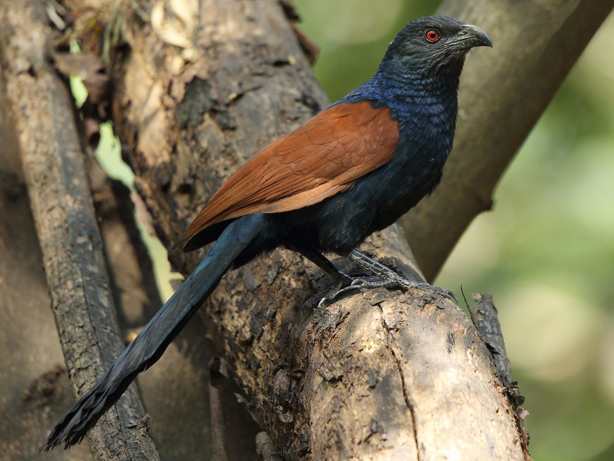

Credit: Macaulay Library й Cornell Lab of Ornithology ML45127481
рд╣реА рдкреБрд╕реНрддрд┐рдХрд╛ рдХреНрд░рд┐рдПрдЯрд┐рд╡реНрд╣ рдХреЙрдордиреНрд╕ рдЕрдЯреНрд░рд┐рдмреНрдпреВрд╢рди-рдиреЙрдирдХрдорд░реНрд╢рд┐рдпрд▓-рд╢реЗрдЕрд░рдЕрд▓рд╛рдЗрдХ рек.реж рдЖрдВрддрд░рд░рд╛рд╖реНрдЯреНрд░реАрдп рдкрд░рд╡рд╛рдиреНрдпрд╛рдВрддрд░реНрдЧрдд (CC BY-NC-SA 4.0) рдЙрдкрд▓рдмреНрдз рдЖрд╣реЗ.
рдЖрдкрд▓реНрдпрд╛рд▓рд╛ рдЦрд╛рд▓реАрд▓ рдЧреЛрд╖реНрдЯреАрдВрдЪреА рдореБрднрд╛ рдЖрд╣реЗ:
рдЦрд╛рд▓реАрд▓ рдЕрдЯреАрдВрдЪреНрдпрд╛ рдЕрдзреАрди:
рдЕрдзрд┐рдХ рдорд╛рд╣рд┐рддреАрд╕рд╛рдареА рднреЗрдЯ рджреНрдпрд╛: https://creativecommons.org/licenses/by-nc-sa/4.0/
й реирежреирел рдпреЛрдЧреЗрд╢ рд╡рд╛рдбрджреЗрдХрд░
рд╕рд╛рд╡рд┐рддреНрд░реАрдмрд╛рдИ рдлреБрд▓реЗ рдкреБрдгреЗ рд╡рд┐рджреНрдпрд╛рдкреАрда (SPPU) рдкрд░рд┐рд╕рд░, рд╢рд╣рд░рд╛рдЪреНрдпрд╛ рдордзреНрдпрднрд╛рдЧреА рдЕрд╕рд▓реЗрд▓реЗ рекрезрез рдПрдХрд░ (резремрем.рейрей рд╣реЗрдХреНрдЯрд░) рдХреНрд╖реЗрддреНрд░рдлрд│ рдЕрд╕рд▓реЗрд▓реЗ рдЬреИрд╡рд╡рд┐рд╡рд┐рдзрддрд╛ рд╣реЙрдЯрд╕реНрдкреЙрдЯ рдЖрд╣реЗ. 18.5529░N 73.8352░E рдЕрдХреНрд╖рд╛рдВрд╢-рд░реЗрдЦрд╛рдВрд╢рд╛рд╡рд░, рд╣рд╛ рдкрд░рд┐рд╕рд░ рд╕рдореБрджреНрд░рд╕рдкрд╛рдЯреАрдкрд╛рд╕реВрди рдЕрдВрджрд╛рдЬреЗ релремреж рдореАрдЯрд░ рдЙрдВрдЪреАрд╡рд░ рдЖрд╣реЗ.
рдХреЕрдореНрдкрд╕рдордзреНрдпреЗ рд╡рд┐рд╡рд┐рдз рдЕрдзрд┐рд╡рд╛рд╕ рдЖрд╣реЗрдд, рдЬреЗ рд╡рд┐рд╡рд┐рдз рдкреНрд░рдХрд╛рд░рдЪреНрдпрд╛ рдкрдХреНрд╖реНрдпрд╛рдВрд╕рд╛рдареА рдЙрдкрдпреБрдХреНрдд рдЖрд╣реЗрдд. рдпрд╛ рднреВрднрд╛рдЧрд╛рдд рдореВрд│ рдЖрдгрд┐ рд╡рд┐рджреЗрд╢реА рдЭрд╛рдбреЗ, рдЧрд╡рддрд╛рд│ рдкреНрд░рджреЗрд╢, рд▓реЙрди, рдХреГрддреНрд░рд┐рдо рдЬрд▓рд╛рд╢рдп, рдмрд╛рдЧрд╛ рдЖрдгрд┐ рдЗрдорд╛рд░рддреА рдЖрд╣реЗрдд. рдЕрдзрд┐рд╡рд╛рд╕рд╛рдВрдЪреЗ рд╣реЗ рдорд┐рд╢реНрд░рдг рд╕реНрдерд╛рдирд┐рдХ рдЖрдгрд┐ рд╕реНрдерд▓рд╛рдВрддрд░рд┐рдд рдкрдХреНрд╖реНрдпрд╛рдВрд╕рд╛рдареА рдЙрддреНрдХреГрд╖реНрдЯ рд╕рдВрдзреА рдкреНрд░рджрд╛рди рдХрд░рддреЗ.
рд╡рд┐рджреНрдпрд╛рдкреАрдард╛рдЪреНрдпрд╛ рдкрд░рд┐рд╕рд░рд╛рдд резрелреж рд╣реВрди рдЕрдзрд┐рдХ рдкреНрд░рдХрд╛рд░рдЪреА рдЭрд╛рдбреЗ рдЖрд╣реЗрдд, рдЬреНрдпрд╛рдореБрд│реЗ рд╣реЗ рдПрдХ рд╢рд╣рд░реА рд╡рди рдмрдирд▓реЗ рдЖрд╣реЗ. рд╡рдб (Ficus benghalensis), рдкрд┐рдВрдкрд│ (Ficus religiosa), рдХрдбреБрд▓рд┐рдВрдм (Azadirachta indica) рдЖрдгрд┐ рдХрд╛рдЯреЗрд╕рд╛рд╡рд░ (Bombax ceiba) рдпрд╛рдВрд╕рд╛рд░рдЦреНрдпрд╛ рдореВрд│ рдкреНрд░рдЬрд╛рддреА рднреВрднрд╛рдЧрд╛рд╡рд░ рд╡рд░реНрдЪрд╕реНрд╡ рдЧрд╛рдЬрд╡рддрд╛рдд, рддрд░ рд╢реЛрднреЗрдЪреА рдЖрдгрд┐ рдЖрдпрд╛рдд рдХреЗрд▓реЗрд▓реА рдЭрд╛рдбреЗ рдЬрд╕реЗ рдЖрдлреНрд░рд┐рдХрди рдмреНрд▓реЕрдХрд╡реБрдб (Dalbergia melanoxylon), рд░реЗрди рдЯреНрд░реА (Samanea saman), рдЧреБрд▓рдореЛрд╣рд░ (Delonix regia) рдЖрдгрд┐ рдХреЙрдкрд░ рдкреЙрдб (Peltophorum pterocarpum) рд╡рд┐рд╡рд┐рдзрддреЗрдд рднрд░ рдШрд╛рд▓рддрд╛рдд. рд╣реА рд╕рдореГрджреНрдз рд╡рдирд╕реНрдкрддреА рд╡рд┐рд╡рд┐рдз рдкрдХреНрд╖реА рдкреНрд░рдЬрд╛рддреАрдВрд╕рд╛рдареА рдЖрд╡рд╢реНрдпрдХ рдШрд░рдЯреА рдмрд╛рдВрдзрдгреНрдпрд╛рдЪреА рдЬрд╛рдЧрд╛, рдирд┐рд╡рд╛рд░рд╛ рдЖрдгрд┐ рдЕрдиреНрдирд╛рдЪреЗ рд╕реНрд░реЛрдд рдкреБрд░рд╡рддреЗ.
рдХреЕрдореНрдкрд╕ рдкрд░рд┐рд╕рдВрд╕реНрдереЗрд╡рд░ рд╡рд┐рд╡рд┐рдз рдорд╛рдирд╡реА рдХреНрд░рд┐рдпрд╛рдХрд▓рд╛рдкрд╛рдВрдЪрд╛ рджрдмрд╛рд╡ рдЖрд╣реЗ, рдЬреНрдпрд╛рдореБрд│реЗ рдкрдХреНрд╖реНрдпрд╛рдВрдЪреНрдпрд╛ рд▓реЛрдХрд╕рдВрдЦреНрдпреЗрд╡рд░ рдкрд░рд┐рдгрд╛рдо рд╣реЛрддреЛ:
рджрд┐рд╡рд╕рд╛рдЪреА рд╡реЗрд│:
SPPU рдХреЕрдореНрдкрд╕рдордзреАрд▓ рдкрдХреНрд╖реНрдпрд╛рдВрдЪреА рдиреЛрдВрдж eBird рджреНрд╡рд╛рд░реЗ ( SPPU eBird Hotspot) рдХрд░рдгреНрдпрд╛рдд рдЬреНрдпрд╛ рдкрдХреНрд╖реА рдирд┐рд░реАрдХреНрд╖рдХрд╛рдВрдиреА рдпреЛрдЧрджрд╛рди рджрд┐рд▓реЗ рддреНрдпрд╛рдВрдЪреЗ рд╡рд┐рд╢реЗрд╖ рдЖрднрд╛рд░.
рддреНрдпрд╛рдВрдЪреНрдпрд╛ рдкрджреНрдзрддрд╢реАрд░ рдиреЛрдВрджреАрдореБрд│реЗ рдХреЕрдореНрдкрд╕рдордзреАрд▓ рдкрдХреНрд╖реНрдпрд╛рдВрдЪреА рд╡рд┐рд╡рд┐рдзрддрд╛ рдЖрдгрд┐ рд╣рдВрдЧрд╛рдореА рдмрджрд▓ рд╕рдордЬрдгреНрдпрд╛рд╕ рдорджрдд рдЭрд╛рд▓реА рдЖрд╣реЗ.
рдЖрд╡рд╢реНрдпрдХ рдЙрдкрдХрд░рдгреЗ:
рдпрд╛ рдкреБрд╕реНрддрд┐рдХреЗрдд рд╡рд┐рджреНрдпрд╛рдкреАрда рдкрд░рд┐рд╕рд░рд╛рдд рдЖрдврд│рдгрд╛рд▒реНрдпрд╛ рд╡рд┐рд╡рд┐рдз рдкрдХреНрд╖реА рдкреНрд░рдЬрд╛рддреАрдВрдЪреА рдорд╛рд╣рд┐рддреА рдЖрд╣реЗ. рдХреЕрдореНрдкрд╕рдордзреАрд▓ рдиреЛрдВрджрд╡рд▓реЗрд▓реНрдпрд╛ рд╕рд░реНрд╡рд╕рд╛рдорд╛рдиреНрдп рдкреНрд░рдЬрд╛рддреАрдВрдЪрд╛ рд╕рдорд╛рд╡реЗрд╢ рдпреЗрдереЗ рдХреЗрд▓рд╛ рдЖрд╣реЗ.
рд╣рд╛ рдкреНрд░рдХрд▓реНрдк https://github.com/yogeshw/sppu-bird-guide рдпреЗрдереЗ рдЙрдкрд▓рдмреНрдз рдЖрд╣реЗ. рдХреГрдкрдпрд╛ рдЕрджреНрдпрддрдирд╛рдВрд╕рд╛рдареА рдЗрд╢реНрдпреВ рдХрд┐рдВрд╡рд╛ рдкреБрд▓ рд╡рд┐рдирдВрддреНрдпрд╛ рдкрд╛рдард╡рд╛рд╡реНрдпрд╛рдд.
Credit: Macaulay Library й Cornell Lab of Ornithology ML45127481
Size: рдШрд╛рд░реАрдПрд╡рдврд╛
Status: рдЕрддрд┐рдиреЗрд╣рдореА рдЖрдврд│рдгрд╛рд░рд╛ рд╕реНрдерд╛рдирд┐рдХ
Field characters: рдореЛрдард╛ рд╢рд┐рдХрд╛рд░реА рдкрдХреНрд╖реА. рдХрд╛рдЯреЗрд░реА рд╢реЗрдкрдЯреА рдЖрдгрд┐ рд▓рд╛рдВрдм рдкрдВрдЦ рд╣реЗ
рд╡реИрд╢рд┐рд╖реНрдЯреНрдп. рдкрдВрдЦ рдХрд╛рд│рд╕рд░ рддрдкрдХрд┐рд░реА, рддрд│рд╛рд╢реА рдХрд┐рдВрдЪрд┐рдд рдлрд┐рдХрдЯ.
Distribution: рдкрд░рд┐рд╕рд░рд╛рддреАрд▓ рд╕рд░реНрд╡рддреНрд░
Habits: рдЙрдВрдЪ рдЖрдХрд╛рд╢рд╛рдд рдЧрд░рдЧрд░ рдлрд┐рд░рддрд╛рдирд╛ рджрд┐рд╕рддреЗ. рд▓рд╣рд╛рди рд╕рд╕реНрддрди рдкреНрд░рд╛рдгреА, рдкрдХреНрд╖реА рдЖрдгрд┐ рдореГрдд
рдкреНрд░рд╛рдгреА рдЦрд╛рддреЗ.
Nesting: рдбрд┐рд╕реЗрдВрдмрд░ рддреЗ рдПрдкреНрд░рд┐рд▓ рджрд░рдореНрдпрд╛рди рдкреНрд░рдЬрдирди. рдЙрдВрдЪ рдЭрд╛рдбрд╛рдВрд╡рд░
рдХрд╛рдбреНрдпрд╛-рдХрдЪрд▒реНрдпрд╛рдкрд╛рд╕реВрди рдШрд░рдЯреЗ. реи-рей рдкрд╛рдВрдврд░реА, рддрдкрдХрд┐рд░реА рдард┐рдкрдХреНрдпрд╛рдВрдЪреА рдЕрдВрдбреА. рджреЛрдиреНрд╣реА
рдкрд╛рд▓рдХ рдЕрдВрдбреА рдЙрдмрд╡рддрд╛рдд.
Credit: Macaulay Library й Cornell Lab of Ornithology ML609495675
Size: рдШрд╛рд░реАрдПрд╡рдврд╛
Status: рдиреЗрд╣рдореА рдЖрдврд│рдгрд╛рд░рд╛ рд╕реНрдерд╛рдирд┐рдХ
Field characters: рдореЛрдард╛ рдХрд╛рд│рд╛ рдкрдХреНрд╖реА, рдорд╛рдиреЗрд╡рд░ рд▓рд╛рд▓ рдкрдЯреНрдЯрд╛. рд▓рд╛рдВрдм рд╡рд╛рдХрдбреА рдЪреЛрдЪ рдЖрдгрд┐
рдбреЛрдХреНрдпрд╛рд╡рд░реАрд▓ рдЙрдШрдбрд╛ рд▓рд╛рд▓ рднрд╛рдЧ рдард│рдХ.
Distribution: рдкрд░рд┐рд╕рд░рд╛рддреАрд▓ рдореЛрдХрд│реНрдпрд╛ рдЬрд╛рдЧрд╛, рдЧрд╡рддрд╛рд│ рдкреНрд░рджреЗрд╢ рдЖрдгрд┐ рдкрд╛рдгрд╡рдареЗ
Habits: рд╣рд│реВрд╣рд│реВ рдЪрд╛рд▓рдд рд╢рд┐рдХрд╛рд░ рдХрд░рддреЛ. рд▓рд╣рд╛рди рдЧрдЯрд╛рдд рдЖрдврд│рддреЛ. рдХреАрдЯрдХ рдЖрдгрд┐ рд▓рд╣рд╛рди рдкреНрд░рд╛рдгреА
рдЦрд╛рддреЛ.
Nesting: рдкрд╛рд╡рд╕рд╛рд│реНрдпрд╛рдд рдкреНрд░рдЬрдирди. рдореЛрдареНрдпрд╛ рдЭрд╛рдбрд╛рдВрд╡рд░ рдордВрдЪрд╛рд╕рд╛рд░рдЦреЗ рдШрд░рдЯреЗ. реи-рек рдлрд┐рдХрдЯ
рдирд┐рд│рд╕рд░-рдкрд╛рдВрдврд░реА рдЕрдВрдбреА.

Credit: Macaulay Library й Cornell Lab of Ornithology ML303618951
Size: рдШрд╛рд░реАрдПрд╡рдврд╛
Status: рджреБрд░реНрдорд┐рд│ рд╣рд┐рд╡рд╛рд│реА рдкрд╛рд╣реБрдгрд╛
Field characters: рдореЛрдард╛, рд╢рдХреНрддрд┐рд╢рд╛рд▓реА рд╕рд╕рд╛рдгрд╛. рд╡рд░рдЪрд╛ рднрд╛рдЧ рдЧрдбрдж рдХрд░рдбрд╛, рдЦрд╛рд▓реВрди
рдкрдЯреНрдЯреЗрджрд╛рд░. рдХрд╛рд│рд╛ тАЩрдорд┐рд╢рд╛рдВрд╕рд╛рд░рдЦрд╛тАЩ рдкрдЯреНрдЯрд╛ рд╡рд┐рд╢рд┐рд╖реНрдЯ.
Distribution: рдХрдзреАрдХрдзреА рдЙрдВрдЪ рдЗрдорд╛рд░рддреА рдЖрдгрд┐ рдореЛрдХрд│реНрдпрд╛ рдЬрд╛рдЧрд╛рдВрдордзреНрдпреЗ
Habits: рд╡реЗрдЧрд╡рд╛рди рдЖрдгрд┐ рдЪрдкрд│ рд╢рд┐рдХрд╛рд░реА. рд╣рд╡реЗрдд рднрд░рд╛рд░реА рдорд╛рд░реВрди рдкрдХреНрд╖реА рдкрдХрдбрддреЛ.
Nesting: рдкрд░рд┐рд╕рд░рд╛рдд рдкреНрд░рдЬрдирди рдХрд░рдд рдирд╛рд╣реА; рдлрдХреНрдд рд╣рд┐рд╡рд╛рд│реА рдкрд╛рд╣реБрдгрд╛.

Credit: Macaulay Library й Cornell Lab of Ornithology ML126386591
Size: рдореИрдиреЗрдкреЗрдХреНрд╖рд╛ рдореЛрдард╛
Status: рдиреЗрд╣рдореА рдЖрдврд│рдгрд╛рд░рд╛ рд╕реНрдерд╛рдирд┐рдХ
Field characters: рдЫреЛрдЯрд╛ рд╕рд╕рд╛рдгрд╛, рд▓рд╛рд▓ рдбреЛрд│реЗ рдЖрдгрд┐ рдкрдЯреНрдЯреЗрджрд╛рд░ рдЫрд╛рддреА рд╡рд┐рд╢рд┐рд╖реНрдЯ. рд╡рд░реВрди
рдХрд░рдбрд╛, рдЦрд╛рд▓реВрди рдкрд╛рдВрдврд░рд╛, рддрд╛рдВрдмреВрд╕ рдкрдЯреНрдЯреНрдпрд╛рдВрд╕рд╣.
Distribution: рдкрд░рд┐рд╕рд░рд╛рддреАрд▓ рд╡реГрдХреНрд╖рд░рд╛рдЬреА рдЖрдгрд┐ рдмрд╛рдЧрд╛
Habits: рд▓рд╣рд╛рди рдкрдХреНрд╖реА, рд╕рд╕реНрддрди рдкреНрд░рд╛рдгреА рдЖрдгрд┐ рдХреАрдЯрдХ рдЦрд╛рддреЛ. рдЦреВрдк рдЪрдкрд│ рд╢рд┐рдХрд╛рд░реА.
Nesting: рдорд╛рд░реНрдЪ рддреЗ рдЬреБрд▓реИ рдкреНрд░рдЬрдирди рдХрд╛рд│. рдЭрд╛рдбрд╛рдВрд╡рд░ рдХрд╛рдбреНрдпрд╛-рдкрд╛рдирд╛рдВрдЪреЗ рдШрд░рдЯреЗ. рей-рек
рдирд┐рд│рд╕рд░ рдкрд╛рдВрдврд░реА рдЕрдВрдбреА.

Credit: Macaulay Library й Cornell Lab of Ornithology ML614444237
Size: рдмреБрд▓рдмреБрд▓рд╛рдкреЗрдХреНрд╖рд╛ рдореЛрдареА
Status: рдиреЗрд╣рдореА рдЖрдврд│рдгрд╛рд░рд╛ рд╕реНрдерд╛рдирд┐рдХ
Field characters: рдордзреНрдпрдо рдЖрдХрд╛рд░рд╛рдЪрд╛ рдкрдХреНрд╖реА. рдкрд╛рдВрдврд░рд╛ рдЪреЗрд╣рд░рд╛, рдЧрд│рд╛, рдЫрд╛рддреА; рдЧрдбрдж
рддрдкрдХрд┐рд░реА рд╢рд░реАрд░. рдЪреЛрдЪреАрдЬрд╡рд│ рд▓рд╛рд▓ рдкрдЯреНрдЯрд╛.
Distribution: рдкрд░рд┐рд╕рд░рд╛рддреАрд▓ рдкрд╛рдгрд╡рдареЗ рдЖрдгрд┐ рджрд▓рджрд▓реАрдЪреЗ рднрд╛рдЧ
Habits: рдкрд╛рдгреНрдпрд╛рдЬрд╡рд│ рд░рд╛рд╣рддреЗ. рдХреАрдЯрдХ, рдЫреЛрдЯреЗ рдорд╛рд╕реЗ рдЖрдгрд┐ рд╡рдирд╕реНрдкрддреА рдЦрд╛рддреЗ.
Nesting: рджрд╛рдЯ рд╡рдирд╕реНрдкрддреАрдд рдШрд░рдЯреЗ. рек-рем рдХреНрд░реАрдореА рдкрд╛рдВрдврд░реА, рддрдкрдХрд┐рд░реА рдард┐рдкрдХреНрдпрд╛рдВрдЪреА рдЕрдВрдбреА.
рджреЛрдиреНрд╣реА рдкрд╛рд▓рдХ рдХрд╛рд│рдЬреА рдШреЗрддрд╛рдд.
Credit: Macaulay Library й Cornell Lab of Ornithology ML126568571
Size: рдореИрдиреЗрдкреЗрдХреНрд╖рд╛ рдореЛрдард╛
Status: рдЕрддрд┐рдиреЗрд╣рдореА рдЖрдврд│рдгрд╛рд░рд╛ рд╕реНрдерд╛рдирд┐рдХ
Field characters: рдордзреНрдпрдо рдЖрдХрд╛рд░рд╛рдЪрд╛ рдмрдЧрд│рд╛. рддрдкрдХрд┐рд░реА рд╢рд░реАрд░, рдкрд╛рдВрдврд░реЗ рдкрдВрдЦ. рдкрд┐рд╡рд│реА
рдЪреЛрдЪ рдЖрдгрд┐ рдкрд╛рдп.
Distribution: рдкрд░рд┐рд╕рд░рд╛рддреАрд▓ рдкрд╛рдгрд╡рдареЗ рдЖрдгрд┐ рджрд▓рджрд▓реАрдЪреЗ рднрд╛рдЧ
Habits: рдорд╛рд╕реЗ, рдмреЗрдбреВрдХ рдЖрдгрд┐ рдХреАрдЯрдХ рдЦрд╛рддреЛ. рдкрд╛рдгреНрдпрд╛рдЬрд╡рд│ рдмрд╕реВрди рд╢рд┐рдХрд╛рд░ рдХрд░рддреЛ.
Nesting: рдЬреВрди рддреЗ рд╕рдкреНрдЯреЗрдВрдмрд░ рдкреНрд░рдЬрдирди рдХрд╛рд│. рдкрд╛рдгреНрдпрд╛рдЬрд╡рд│реАрд▓ рдЭрд╛рдбрд╛рдВрд╡рд░ рдШрд░рдЯреЗ. рей-рел рдлрд┐рдХрдЯ
рдирд┐рд│реА рдЕрдВрдбреА.
Credit: Macaulay Library й Cornell Lab of Ornithology ML304986701
Size: рдХрд╛рд╡рд│реНрдпрд╛рдкреЗрдХреНрд╖рд╛ рдореЛрдард╛
Status: рджреБрд░реНрдорд┐рд│ рд╕реНрдерд╛рдирд┐рдХ
Field characters: рдордзреНрдпрдо рдЖрдХрд╛рд░рд╛рдЪрд╛ рдмрдЧрд│рд╛. рдХрд╛рд│реА рдЯреЛрдкреА, рдкрд╛рда; рдХрд░рдбреЗ рдкрдВрдЦ; рдкрд╛рдВрдврд░рд╛
рддрд│рднрд╛рдЧ. рд▓рд╛рд▓ рдбреЛрд│реЗ, рдЬрд╛рдб рдЪреЛрдЪ.
Distribution: рдкрд░рд┐рд╕рд░рд╛рддреАрд▓ рдкрд╛рдгрд╡рдареЗ рдЖрдгрд┐ рджрд▓рджрд▓реАрдЪреЗ рднрд╛рдЧ
Habits: рд░рд╛рддреНрд░реА рд╕рдХреНрд░рд┐рдп. рдорд╛рд╕реЗ, рдмреЗрдбреВрдХ рдЖрдгрд┐ рдХреАрдЯрдХ рдЦрд╛рддреЛ.
Nesting: рдЬреВрди рддреЗ рд╕рдкреНрдЯреЗрдВрдмрд░ рдкреНрд░рдЬрдирди рдХрд╛рд│. рдкрд╛рдгреНрдпрд╛рдЬрд╡рд│реАрд▓ рдЭрд╛рдбрд╛рдВрд╡рд░ рдШрд░рдЯреЗ. рей-рел рдлрд┐рдХрдЯ
рдирд┐рд│рд╕рд░ рдЕрдВрдбреА.
Credit: Unknown - Unknown location Macaulay Library й Cornell Lab of Ornithology ML608663702
Size: рдореИрдиреЗрдкреЗрдХреНрд╖рд╛ рдореЛрдард╛
Status: рдЕрддрд┐рдиреЗрд╣рдореА рдЖрдврд│рдгрд╛рд░рд╛ рд╕реНрдерд╛рдирд┐рдХ
Field characters: рдордзреНрдпрдо рдЖрдХрд╛рд░рд╛рдЪрд╛ рдкрд╛рдВрдврд░рд╛ рдмрдЧрд│рд╛. рдкреНрд░рдЬрдирди рдХрд╛рд│рд╛рдд рдбреЛрдХреЗ, рдЫрд╛рддреА,
рдкрд╛рдареАрд╡рд░ рдХреЗрд╢рд░реА рдкрд┐рд╕рд╛рд░реЗ.
Distribution: рдкрд░рд┐рд╕рд░рд╛рддреАрд▓ рдЧрд╡рддрд╛рд│ рднрд╛рдЧ рдЖрдгрд┐ рдореЛрдХрд│реНрдпрд╛ рдЬрд╛рдЧрд╛
Habits: рдЧреБрд░рд╛рдВрдЪреНрдпрд╛ рдЬрд╡рд│рдкрд╛рд╕ рд░рд╛рд╣рддреЛ. рдХреАрдЯрдХ рдЖрдгрд┐ рд▓рд╣рд╛рди рдкреНрд░рд╛рдгреА рдЦрд╛рддреЛ.
Nesting: рдЬреВрди рддреЗ рд╕рдкреНрдЯреЗрдВрдмрд░ рдкреНрд░рдЬрдирди рдХрд╛рд│. рд╡рд╕рд╛рд╣рддреАрдд рд░рд╛рд╣рддреЛ. рей-рек рдлрд┐рдХрдЯ рдирд┐рд│реА
рдЕрдВрдбреА.

Credit: Macaulay Library й Cornell Lab of Ornithology ML168489091
Size: рдореИрдиреЗрдкреЗрдХреНрд╖рд╛ рдореЛрдард╛
Status: рдиреЗрд╣рдореА рдЖрдврд│рдгрд╛рд░рд╛ рд╕реНрдерд╛рдирд┐рдХ
Field characters: рдордзреНрдпрдо рдЖрдХрд╛рд░рд╛рдЪрд╛ рд╢реБрднреНрд░ рдкрд╛рдВрдврд░рд╛ рдмрдЧрд│рд╛. рдХрд╛рд│реА рдЪреЛрдЪ, рдХрд╛рд│реЗ рдкрд╛рдп,
рдкрд┐рд╡рд│реЗ рдкрдВрдЬреЗ.
Distribution: рдкрд░рд┐рд╕рд░рд╛рддреАрд▓ рдкрд╛рдгрд╡рдареЗ рдЖрдгрд┐ рджрд▓рджрд▓реАрдЪреЗ рднрд╛рдЧ
Habits: рдорд╛рд╕реЗ, рдмреЗрдбреВрдХ рдЖрдгрд┐ рдХреАрдЯрдХ рдЦрд╛рддреЛ. рдкрд╛рдгреНрдпрд╛рдд рдЙрднрд╛ рд░рд╛рд╣реВрди рд╢рд┐рдХрд╛рд░ рдХрд░рддреЛ.
Nesting: рдЬреВрди рддреЗ рд╕рдкреНрдЯреЗрдВрдмрд░ рдкреНрд░рдЬрдирди рдХрд╛рд│. рд╡рд╕рд╛рд╣рддреАрдд рд░рд╛рд╣рддреЛ. рей-рел рдлрд┐рдХрдЯ рдирд┐рд│рд╕рд░
рдЕрдВрдбреА.

Credit: Macaulay Library й Cornell Lab of Ornithology ML308065631
Size: рдореИрдиреЗрдкреЗрдХреНрд╖рд╛ рдореЛрдард╛
Status: рдЕрддрд┐рдиреЗрд╣рдореА рдЖрдврд│рдгрд╛рд░рд╛ рд╕реНрдерд╛рдирд┐рдХ
Field characters: рдЬрд╛рдбрдЬреВрдб рдХрд░рдбрд╛ рдкрдХреНрд╖реА. рдорд╛рдиреЗрд╡рд░ рдЗрдВрджреНрд░рдзрдиреБрд╖реА рдкрд┐рд╕рд╛рд░реЗ. рдкрдВрдЦрд╛рдВрд╡рд░
рджреЛрди рдХрд╛рд│реЗ рдкрдЯреНрдЯреЗ, рд╢реЗрдкрдЯреАрд╡рд░ рдХрд╛рд│рд╛ рдкрдЯреНрдЯрд╛.
Distribution: рдкрд░рд┐рд╕рд░рд╛рддреАрд▓ рдЗрдорд╛рд░рддреА рдЖрдгрд┐ рдореЛрдХрд│реНрдпрд╛ рдЬрд╛рдЧрд╛
Habits: рдХрд│рдкрд╛рдиреЗ рд░рд╛рд╣рддреЛ. рдЬрдорд┐рдиреАрд╡рд░реВрди рдзрд╛рдиреНрдп рд╡реЗрдЪрддреЛ. рд╢рд╣рд░реА рдЬреАрд╡рдирд╛рд╢реА рдЬреБрд│рд╡реВрди
рдШреЗрддреЛ.
Nesting: рд╡рд░реНрд╖рднрд░ рдкреНрд░рдЬрдирди. рдЗрдорд╛рд░рддреАрдВрд╡рд░ рдХрд╛рдбреНрдпрд╛рдВрдЪреЗ рдШрд░рдЯреЗ. реи рдкрд╛рдВрдврд░реА рдЕрдВрдбреА.
рджреЛрдиреНрд╣реА рдкрд╛рд▓рдХ рдХрд╛рд│рдЬреА рдШреЗрддрд╛рдд.
Credit: Macaulay Library й Cornell Lab of Ornithology ML621165796
Size: рдореИрдиреЗрдПрд╡рдврд╛
Status: рдиреЗрд╣рдореА рдЖрдврд│рдгрд╛рд░рд╛ рд╕реНрдерд╛рдирд┐рдХ
Field characters: рдмрд╛рд░реАрдХ, рд▓рд╛рдВрдм рд╢реЗрдкрдЯреАрдЪрд╛ рдкрд╛рд░рд╡рд╛. рдЧреБрд▓рд╛рдмреА-рдХрд░рдбрд╛ рд░рдВрдЧ. рдорд╛рдиреЗрд╡рд░
рд╡рд┐рд╢рд┐рд╖реНрдЯ рдХрд╛рд│реЗ-рдкрд╛рдВрдврд░реЗ рдард┐рдкрдХреЗ.
Distribution: рдкрд░рд┐рд╕рд░рд╛рддреАрд▓ рд╡реГрдХреНрд╖рд░рд╛рдЬреА рдЖрдгрд┐ рдмрд╛рдЧрд╛рдВрдордзреНрдпреЗ
Habits: рдиреЗрд╣рдореА рдЬреЛрдбреАрдиреЗ рдХрд┐рдВрд╡рд╛ рдЫреЛрдЯреНрдпрд╛ рдХрд│рдкрд╛рдд. рдЬрдорд┐рдиреАрд╡рд░ рдзрд╛рдиреНрдп рдЖрдгрд┐ рдмрд┐рдпрд╛
рдЦрд╛рддреЛ.
Nesting: рдЭрд╛рдбреЗ рдЖрдгрд┐ рдЭреБрдбрдкрд╛рдВрдордзреНрдпреЗ рд╕реИрд▓ рдШрд░рдЯреЗ рдмрд╛рдВрдзрддреЛ. реи рдкрд╛рдВрдврд░реА рдЕрдВрдбреА. рджреЛрдиреНрд╣реА
рдкрд╛рд▓рдХ резрек-резрем рджрд┐рд╡рд╕ рдЕрдВрдбреА рдЙрдмрд╡рддрд╛рдд.

Credit: Macaulay Library й Cornell Lab of Ornithology ML622010668
Size: рдореИрдиреЗрдкреЗрдХреНрд╖рд╛ рд▓рд╣рд╛рди
Status: рдиреЗрд╣рдореА рдЖрдврд│рдгрд╛рд░рд╛ рд╕реНрдерд╛рдирд┐рдХ
Field characters: рд▓рд╣рд╛рди рдЖрдгрд┐ рдирд╛рдЬреВрдХ рдкрд╛рд░рд╡рд╛. рдлрд┐рдХрдЯ рддрдкрдХрд┐рд░реА рд░рдВрдЧ, рдорд╛рдиреЗрд╡рд░ рдЬрд╛рдВрднрд│реА
рдЫрдЯрд╛. рдорд╛рдиреЗрдЪреНрдпрд╛ рдмрд╛рдЬреВрдВрд╡рд░ рдХрд╛рд│реЗ-рд▓рд╛рд▓ рдЪреМрдХрдЯреА рдирдореБрдирд╛.
Distribution: рдкрд░рд┐рд╕рд░рд╛рддреАрд▓ рд╕рд░реНрд╡рддреНрд░, рд╡рд┐рд╢реЗрд╖рддрдГ рдореЛрдХрд│реНрдпрд╛ рднрд╛рдЧрд╛рдд
Habits: рдиреЗрд╣рдореА рдЬреЛрдбреАрдиреЗ рджрд┐рд╕рддреЛ. рдЬрдорд┐рдиреАрд╡рд░ рдмрд┐рдпрд╛ рд╡реЗрдЪрддреЛ. рдЧреЛрдб рд╕рдВрдЧреАрддрдордп рдЖрд╡рд╛рдЬ
рдХрд░рддреЛ.
Nesting: рдЭреБрдбрдкреЗ рдЖрдгрд┐ рд▓рд╣рд╛рди рдЭрд╛рдбрд╛рдВрд╡рд░ рд╕рд╛рдзреЗ рдШрд░рдЯреЗ. реи рдкрд╛рдВрдврд░реА рдЕрдВрдбреА. рджреЛрдиреНрд╣реА рдкрд╛рд▓рдХ
резрей-резрел рджрд┐рд╡рд╕ рдЕрдВрдбреА рдЙрдмрд╡рддрд╛рдд.

Credit: Macaulay Library й Cornell Lab of Ornithology ML126390831
Size: рдореИрдиреЗрдкреЗрдХреНрд╖рд╛ рдмрд░реАрдЪ рдореЛрдареА
Status: рдиреЗрд╣рдореА рдЖрдврд│рдгрд╛рд░рд╛ рд╕реНрдерд╛рдирд┐рдХ
Field characters: рдореЛрдареА рдЯрд┐рдЯрд╡реА. рдбреЛрд│реНрдпрд╛рдВрд╕рдореЛрд░ рд▓рд╛рд▓ рдорд╛рдВрд╕рд▓ рд╡рд╛рдв рд╡рд┐рд╢рд┐рд╖реНрдЯ. рддрдкрдХрд┐рд░реА
рдкрдВрдЦ, рдХрд╛рд│реЗ рдбреЛрдХреЗ рд╡ рдЫрд╛рддреА, рдкрд╛рдВрдврд░рд╛ рдЪреЗрд╣рд░рд╛ рд╡ рддрд│рднрд╛рдЧ.
Distribution: рдкрд░рд┐рд╕рд░рд╛рддреАрд▓ рдореЛрдХрд│реНрдпрд╛ рднрд╛рдЧрд╛рдд, рд╡рд┐рд╢реЗрд╖рддрдГ рдкрд╛рдгрд╡рдареНрдпрд╛рдВрдЬрд╡рд│
Habits: "рдбрд┐рдб-рд╣реА-рдбреВ-рдЗрдЯ" рдпрд╛ рдзреЛрдХреНрдпрд╛рдЪреНрдпрд╛ рдЖрд╡рд╛рдЬрд╛рд╕рд╛рдареА рдкреНрд░рд╕рд┐рджреНрдз. рджрд┐рд╡рд╕рд╛-рд░рд╛рддреНрд░реА
рд╕рдХреНрд░рд┐рдп. рдХреАрдЯрдХ рд╡ рд▓рд╣рд╛рди рдкреНрд░рд╛рдгреА рдЦрд╛рддреЗ.
Nesting: рдЬрдорд┐рдиреАрд╡рд░ рдЙрдерд│ рдЦрдбреНрдбреНрдпрд╛рдд рдШрд░рдЯреЗ. рдЦрдбрдХрд╛рд│ рднрд╛рдЧрд╛рдд. рей-рек рдЬреИрддреВрдиреА-рддрдкрдХрд┐рд░реА
рдЕрдВрдбреА. рджреЛрдиреНрд╣реА рдкрд╛рд▓рдХ реирео-рейреж рджрд┐рд╡рд╕ рдЙрдмрд╡рддрд╛рдд.

Credit: Macaulay Library й Cornell Lab of Ornithology ML126392811
Size: рдХрд╛рд╡рд│реНрдпрд╛рдкреЗрдХреНрд╖рд╛ рд▓рд╣рд╛рди
Status: рдиреЗрд╣рдореА рдЖрдврд│рдгрд╛рд░рд╛ рд╕реНрдерд╛рдирд┐рдХ
Field characters: рдирд░ рдЪрдордХрджрд╛рд░ рдХрд╛рд│рд╛, рд▓рд╛рд▓ рдбреЛрд│реЗ. рдорд╛рджреА рддрдкрдХрд┐рд░реА, рдкрд╛рдВрдврд░реЗ рдард┐рдкрдХреЗ,
рдЦрд╛рд▓реВрди рдкрдЯреНрдЯреЗрджрд╛рд░. рд▓рд┐рдВрдЧрднреЗрдж рд╕реНрдкрд╖реНрдЯ.
Distribution: рдкрд░рд┐рд╕рд░рд╛рддреАрд▓ рд╕рд░реНрд╡рддреНрд░, рд╡рд┐рд╢реЗрд╖рддрдГ рд╡реГрдХреНрд╖рд░рд╛рдЬреАрдд
Habits: рд╡рд┐рд╢рд┐рд╖реНрдЯ "рдХреВ-рдК" рдЖрд╡рд╛рдЬрд╛рд╕рд╛рдареА рдкреНрд░рд╕рд┐рджреНрдз. рдХрд╛рд╡рд│реНрдпрд╛рдВрдЪреНрдпрд╛ рдШрд░рдЯреНрдпрд╛рдд
рдкрд░рдЬреАрд╡реА. рдлрд│реЗ рд╡ рдмреЗрд░реА рдЦрд╛рддреЛ.
Nesting: рдХрд╛рд╡рд│реЗ рд╡ рдЗрддрд░ рдкрдХреНрд╖реНрдпрд╛рдВрдЪреНрдпрд╛ рдШрд░рдЯреНрдпрд╛рдд рдкрд░рдЬреАрд╡реА рдореНрд╣рдгреВрди рдЕрдВрдбреА
рдШрд╛рд▓рддреЛ.
Credit: Macaulay Library й Cornell Lab of Ornithology ML142648801
Size: рдореИрдиреЗрдкреЗрдХреНрд╖рд╛ рд▓рд╣рд╛рди
Status: рдЙрдиреНрд╣рд╛рд│реА рдкрд╛рд╣реБрдгрд╛
Field characters: рдХрд░рдбрд╛ рдкрдХреНрд╖реА, рдЫрд╛рддреАрд╡рд░ рдЧрдбрдж рдХрд░рдбрд╛ рд░рдВрдЧ, рддрд│рд╛рд╢реА рдлрд┐рдХрдЯ. рдкрд┐рд╡рд│рд╛
рдбреЛрд│реНрдпрд╛рднреЛрд╡рддреАрдЪрд╛ рдХрдбрд╛ рд╡рд┐рд╢рд┐рд╖реНрдЯ.
Distribution: рдкрд░рд┐рд╕рд░рд╛рддреАрд▓ рд╡реГрдХреНрд╖рд░рд╛рдЬреАрдд
Habits: рд▓рдкреВрди-рдЫрдкреВрди рд░рд╛рд╣рддреЛ. рд╣рд│реБрд╡рд╛рд░ рд╢рд┐рдЯреНрдЯреАрд╕рд╛рд░рдЦрд╛ рдЖрд╡рд╛рдЬ рдХрд░рддреЛ. рдореБрдЦреНрдпрддрдГ рдХреАрдЯрдХ
рдЦрд╛рддреЛ.
Nesting: рдлреБрд▓рдкрд╛рдЦрд░реЗ рд╡ рд╢рд┐рдВрдкреА рдкрдХреНрд╖реНрдпрд╛рдВрдЪреНрдпрд╛ рдШрд░рдЯреНрдпрд╛рдд рдкрд░рдЬреАрд╡реА рдореНрд╣рдгреВрди рдЕрдВрдбреА
рдШрд╛рд▓рддреЛ.

Credit: Macaulay Library й Cornell Lab of Ornithology ML133733311
Size: рдореИрдиреЗрдкреЗрдХреНрд╖рд╛ рдмрд░рд╛рдЪ рдореЛрдард╛
Status: рдиреЗрд╣рдореА рдЖрдврд│рдгрд╛рд░рд╛ рд╕реНрдерд╛рдирд┐рдХ
Field characters: рд╢рд┐рдХреНрд░реНрдпрд╛рд╕рд╛рд░рдЦрд╛ рджрд┐рд╕рдгрд╛рд░рд╛. рдЦрд╛рд▓реВрди рдкрдЯреНрдЯреЗрджрд╛рд░. рдкрд┐рд╡рд│рд╛
рдбреЛрд│реНрдпрд╛рднреЛрд╡рддреАрдЪрд╛ рдХрдбрд╛. рдЙрдбрддрд╛рдирд╛ рд╢рд┐рдХреНрд░реНрдпрд╛рд╕рд╛рд░рдЦрд╛ рджрд┐рд╕рддреЛ.
Distribution: рдкрд░рд┐рд╕рд░рд╛рддреАрд▓ рд╡реГрдХреНрд╖рд░рд╛рдЬреАрдд рд╕рд░реНрд╡рддреНрд░
Habits: рд╡рд┐рд╢рд┐рд╖реНрдЯ "рдмреНрд░реЗрди-рдлреАрд╡рд░" рдЖрд╡рд╛рдЬрд╛рд╕рд╛рдареА рдкреНрд░рд╕рд┐рджреНрдз. рдХреАрдЯрдХ рд╡ рдЕрд│реНрдпрд╛
рдЦрд╛рддреЛ.
Nesting: рд╕рд╛рддрднрд╛рдИ рд╡ рдЗрддрд░ рдкрдХреНрд╖реНрдпрд╛рдВрдЪреНрдпрд╛ рдШрд░рдЯреНрдпрд╛рдд рдкрд░рдЬреАрд╡реА. рдорд╛рд░реНрдЪ рддреЗ рдЬреБрд▓реИ
рджрд░рдореНрдпрд╛рди рд╕рдХреНрд░рд┐рдп.

Credit: Macaulay Library й Cornell Lab of Ornithology ML126393221
Size: рдХрд╛рд╡рд│реНрдпрд╛рдПрд╡рдврд╛
Status: рдиреЗрд╣рдореА рдЖрдврд│рдгрд╛рд░рд╛ рд╕реНрдерд╛рдирд┐рдХ
Field characters: рдореЛрдард╛ рдХрд╛рд│рд╛ рдкрдХреНрд╖реА. рдХреЗрд╢рд░реА рдкрдВрдЦ рд╡ рд▓рд╛рдВрдм рд╢реЗрдкрдЯреА. рд▓рд╛рд▓ рдбреЛрд│реЗ рд╡
рд╡рд╛рдХрдбреА рдХрд╛рд│реА рдЪреЛрдЪ рд╡рд┐рд╢рд┐рд╖реНрдЯ.
Distribution: рдкрд░рд┐рд╕рд░рд╛рддреАрд▓ рджрд╛рдЯ рд╡рдирд╕реНрдкрддреАрдд
Habits: рд▓рдкреВрди-рдЫрдкреВрди рд╡рд╛рд╡рд░рддреЛ. рдЬрдорд┐рдиреАрд╡рд░ рдЪрд╛рд▓рддрд╛рдирд╛ рджрд┐рд╕рддреЛ. рдЦреЛрд▓ рдЧреБрд░рдЧреБрд░рдгреНрдпрд╛рдЪрд╛
рдЖрд╡рд╛рдЬ. рдХреАрдЯрдХ рд╡ рд▓рд╣рд╛рди рдкреНрд░рд╛рдгреА рдЦрд╛рддреЛ.
Nesting: рджрд╛рдЯ рд╡рдирд╕реНрдкрддреАрдд рдЬрдорд┐рдиреАрдЬрд╡рд│ рдЫрддрд╛рд╕рд╛рд░рдЦреЗ рдШрд░рдЯреЗ. рей-рел рдкрд╛рдВрдврд░реА рдЕрдВрдбреА. рджреЛрдиреНрд╣реА
рдкрд╛рд▓рдХ резрел-резрем рджрд┐рд╡рд╕ рдЙрдмрд╡рддрд╛рдд.

Credit: Macaulay Library й Cornell Lab of Ornithology ML622584055
Size: рдореИрдиреЗрдкреЗрдХреНрд╖рд╛ рдмрд░рд╛рдЪ рдореЛрдард╛
Status: рдЕрддрд┐рдиреЗрд╣рдореА рдЖрдврд│рдгрд╛рд░рд╛ рд╕реНрдерд╛рдирд┐рдХ
Field characters: рд╣рд┐рд░рд╡рд╛ рдкреЛрдкрдЯ, рд▓рд╛рдВрдм рд╢реЗрдкрдЯреА. рдирд░рд╛рдЪреНрдпрд╛ рдорд╛рдиреЗрднреЛрд╡рддреА рдЧреБрд▓рд╛рдмреА рд╡
рдХрд╛рд│рд╛ рдкрдЯреНрдЯрд╛, рдорд╛рджреАрд▓рд╛ рдирд╕рддреЛ.
Distribution: рдкрд░рд┐рд╕рд░рд╛рддреАрд▓ рд╕рд░реНрд╡рддреНрд░, рд╡рд┐рд╢реЗрд╖рддрдГ рд╡реГрдХреНрд╖рд░рд╛рдЬреАрдд
Habits: рдЖрд╡рд╛рдЬреА, рдХрд│рдкрд╡рд╛рд╕реА. рдореЛрдареНрдпрд╛ рдХрд│рдкрд╛рдд рджрд┐рд╕рддреЛ. рдлрд│реЗ, рдмрд┐рдпрд╛ рд╡ рдзрд╛рдиреНрдп
рдЦрд╛рддреЛ.
Nesting: рдбрд┐рд╕реЗрдВрдмрд░ рддреЗ рдореЗ рдкреНрд░рдЬрдирди. рдЭрд╛рдбрд╛рдВрдЪреНрдпрд╛ рдкреЛрдХрд│реАрдд рдШрд░рдЯреЗ. рей-рек рдкрд╛рдВрдврд░реА рдЕрдВрдбреА.
рджреЛрдиреНрд╣реА рдкрд╛рд▓рдХ реиреи-реирек рджрд┐рд╡рд╕ рдЙрдмрд╡рддрд╛рдд.
Credit: Macaulay Library й Cornell Lab of Ornithology ML133717151
Size: рдХрд╛рд╡рд│реНрдпрд╛рдПрд╡рдврд╛
Status: рджреБрд░реНрдорд┐рд│ рд╕реНрдерд╛рдирд┐рдХ
Field characters: рд░рд╛рдЬрдкреЛрдкрдЯрд╛рдкреЗрдХреНрд╖рд╛ рдореЛрдард╛. рдЬрд╛рдб рд▓рд╛рд▓ рдЪреЛрдЪ. рдирд░рд╛рд▓рд╛ рдЧреБрд▓рд╛рдмреА рд╡ рдХрд╛рд│рд╛
рдЧрд│рдкрдЯреНрдЯрд╛.
Distribution: рдкрд░рд┐рд╕рд░рд╛рддреАрд▓ рд╡реГрдХреНрд╖рд░рд╛рдЬреАрдд, рдЗрддрд░ рдкреЛрдкрдЯрд╛рдВрдкреЗрдХреНрд╖рд╛ рдХрдореА
Habits: рд░рд╛рдЬрдкреЛрдкрдЯрд╛рд╕рд╛рд░рдЦреАрдЪ рд╕рд╡рдп рдкрдг рдЬрд╛рд╕реНрдд рд╕рд╛рд╡рдз. рдлрд│реЗ рд╡ рдмрд┐рдпрд╛ рдЦрд╛рддреЛ.
Nesting: рдореЛрдареНрдпрд╛ рдЬреБрдиреНрдпрд╛ рдЭрд╛рдбрд╛рдВрдЪреНрдпрд╛ рдкреЛрдХрд│реАрдд рдШрд░рдЯреЗ. реи-рек рдкрд╛рдВрдврд░реА рдЕрдВрдбреА. рджреЛрдиреНрд╣реА
рдкрд╛рд▓рдХ реирей-реирем рджрд┐рд╡рд╕ рдЙрдмрд╡рддрд╛рдд.
Credit: Macaulay Library й Cornell Lab of Ornithology ML133932211
Size: рдореИрдиреЗрдПрд╡рдврд╛
Status: рдиреЗрд╣рдореА рдЖрдврд│рдгрд╛рд░рд╛ рд╕реНрдерд╛рдирд┐рдХ
Field characters: рдирд░рд╛рдЪреЗ рдбреЛрдХреЗ рдЬрд╛рдВрднрд│реЗ-рд▓рд╛рд▓, рдорд╛рджреАрдЪреЗ рдирд┐рд│рд╕рд░-рдХрд░рдбреЗ. рджреЛрдШрд╛рдВрдЪреЗрд╣реА
рд╢рд░реАрд░ рд╣рд┐рд░рд╡реЗ рд╡ рдкрд┐рд╡рд│рдЯ рд╢реЗрдкрдЯреАрдЪреЗ рдЯреЛрдХ.
Distribution: рдкрд░рд┐рд╕рд░рд╛рддреАрд▓ рд╡реГрдХреНрд╖рд░рд╛рдЬреАрдд рдирд┐рдпрдорд┐рдд
Habits: рдиреЗрд╣рдореА рдЬреЛрдбреАрдиреЗ рдХрд┐рдВрд╡рд╛ рд▓рд╣рд╛рди рдХрд│рдкрд╛рдд. рдЗрддрд░ рдкреЛрдкрдЯрд╛рдВрдкреЗрдХреНрд╖рд╛ рдЬрд╛рд╕реНрдд рдЭрд╛рдбрд╛рд╡рд░
рд░рд╛рд╣рддреЛ. рдлрд│реЗ рд╡ рдмрд┐рдпрд╛ рдЦрд╛рддреЛ.
Nesting: рдЭрд╛рдбрд╛рдВрдЪреНрдпрд╛ рдкреЛрдХрд│реАрдд рдШрд░рдЯреЗ. рдХрд╛рд│ рд╕реНрдерд╛рдирдкрд░рддреНрд╡реЗ рдмрджрд▓рддреЛ. рей-рек рдкрд╛рдВрдврд░реА рдЕрдВрдбреА.
рджреЛрдиреНрд╣реА рдкрд╛рд▓рдХ реиреи-реирек рджрд┐рд╡рд╕ рдЙрдмрд╡рддрд╛рдд.

Credit: Macaulay Library й Cornell Lab of Ornithology ML80511821
Size: рдореИрдиреЗрдкреЗрдХреНрд╖рд╛ рд▓рд╣рд╛рди
Status: рдЕрддрд┐рдиреЗрд╣рдореА рдЖрдврд│рдгрд╛рд░рд╛ рд╕реНрдерд╛рдирд┐рдХ
Field characters: рд▓рд╣рд╛рди рдШрд╛рд░рд╛рдВрдбреА, рдкрд╛рдВрдврд░реА рдХрдВрдмрд░ рд╡ рдХрд╛рдЯреЗрд░реА рд╢реЗрдкрдЯреА. рдЧрдбрдж
рддрдкрдХрд┐рд░реА-рдХрд╛рд│рд╛ рд░рдВрдЧ.
Distribution: рдкрд░рд┐рд╕рд░рд╛рддреАрд▓ рдЗрдорд╛рд░рддреАрдВрдЪреНрдпрд╛ рдкрд░рд┐рд╕рд░рд╛рдд
Habits: рд╣рд╡реЗрдд рддрд░рдВрдЧрдд рд░рд╛рд╣рдгрд╛рд░рд╛. рдореЛрдареНрдпрд╛ рдХрд│рдкрд╛рдд рдЗрдорд╛рд░рддреАрдВрднреЛрд╡рддреА рдШрд┐рд░рдЯреНрдпрд╛ рдШрд╛рд▓рддрд╛рдирд╛
рджрд┐рд╕рддреЛ.
Nesting: рд╡рд╕рд╛рд╣рддреАрдд рд░рд╛рд╣рдгрд╛рд░рд╛. рдЗрдорд╛рд░рддреАрдВрдЪреНрдпрд╛ рдЫрдкрд░рд╛рдЦрд╛рд▓реА рдорд╛рддреАрдЪреЗ рдШрд░рдЯреЗ. реи-рей рдкрд╛рдВрдврд░реА
рдЕрдВрдбреА. рджреЛрдиреНрд╣реА рдкрд╛рд▓рдХ резреп-реирез рджрд┐рд╡рд╕ рдЙрдмрд╡рддрд╛рдд.

Credit: Macaulay Library й Cornell Lab of Ornithology ML126573081
Size: рдЪрд┐рдордгреАрдкреЗрдХреНрд╖рд╛ рд▓рд╣рд╛рди
Status: рдиреЗрд╣рдореА рдЖрдврд│рдгрд╛рд░рд╛ рд╕реНрдерд╛рдирд┐рдХ
Field characters: рдШрд░рдЪреНрдпрд╛ рдШрд╛рд░рд╛рдВрдбреАрдкреЗрдХреНрд╖рд╛ рд▓рд╣рд╛рди, рдмрд╛рд░реАрдХ рд╢рд░реАрд░ рд╡ рдЦреЛрд▓рдЧрдЯ рдХрд╛рдЯреЗрд░реА
рд╢реЗрдкрдЯреА. рдПрдХреВрдг рдзреБрд░рдХрдЯ рддрдкрдХрд┐рд░реА.
Distribution: рдкрд░рд┐рд╕рд░рд╛рддреАрд▓ рддрд╛рдбрд╛рдЪреНрдпрд╛ рдЭрд╛рдбрд╛рдВрднреЛрд╡рддреА
Habits: рдЕрддрд┐рд╢рдп рд╡реЗрдЧрд╡рд╛рди рдЙрдбреНрдбрд╛рдгрдХреНрд╖рдо, рдХреНрд╡рдЪрд┐рддрдЪ рдмрд╕рддреЛ. рддрд╛рдбрд╛рднреЛрд╡рддреА рджрд┐рд╕рддреЛ. рд╣рд╡реЗрддреАрд▓
рдХреАрдЯрдХ рдЦрд╛рддреЛ.
Nesting: рд╡рд░реНрд╖рднрд░ рдкреНрд░рдЬрдирди. рддрд╛рдбрд╛рдЪреНрдпрд╛ рдкрд╛рдирд╛рдЦрд╛рд▓реА рд▓рд╛рд│реЗрдиреЗ рдШрд░рдЯреЗ рдЪрд┐рдХрдЯрд╡рддреЛ. реи-рей
рдкрд╛рдВрдврд░реА рдЕрдВрдбреА рдШрд╛рд▓рддреЛ.
Credit: Macaulay Library й Cornell Lab of Ornithology ML126564101
Size: рдореИрдиреЗрдкреЗрдХреНрд╖рд╛ рдореЛрдард╛
Status: рдиреЗрд╣рдореА рдЖрдврд│рдгрд╛рд░рд╛ рд╕реНрдерд╛рдирд┐рдХ
Field characters: рдореЛрдард╛ рдЦрдВрдбреНрдпрд╛, рдЪрдордХрджрд╛рд░ рдирд┐рд│реА рдкрд╛рда, рдЪреЙрдХрд▓реЗрдЯреА рдбреЛрдХреЗ рд╡ рдкрд╛рдВрдврд░реА
рдЫрд╛рддреА. рдореЛрдареА рд▓рд╛рд▓ рдЪреЛрдЪ рдард│рдХ.
Distribution: рдкрд░рд┐рд╕рд░рд╛рддреАрд▓ рдкрд╛рдгрд╡рдареЗ рд╡ рдмрд╛рдЧрд╛
Habits: рдард│рдХрдкрдгреЗ рдмрд╕реВрди рд░рд╛рд╣рддреЛ, рд╢рд┐рдХрд╛рд░реАрд╕рд╛рдареА рдЭрдбрдк рдШрд╛рд▓рддреЛ. рдорд╛рд╕реЗ, рдмреЗрдбреВрдХ, рд╕рд░рдбреЗ рд╡
рдореЛрдареЗ рдХреАрдЯрдХ рдЦрд╛рддреЛ.
Nesting: рдорд╛рд░реНрдЪ рддреЗ рдЬреВрди рдкреНрд░рдЬрдирди. рдЬрдорд┐рдиреАрдЪреНрдпрд╛ рдХрдбреЗрдд рднреБрдпрд╛рд░ рдЦрдгреВрди рдШрд░рдЯреЗ. рек-рен
рдкрд╛рдВрдврд░реА рдЕрдВрдбреА. рджреЛрдиреНрд╣реА рдкрд╛рд▓рдХ реиреж-реиреи рджрд┐рд╡рд╕ рдЙрдмрд╡рддрд╛рдд.

Credit: Macaulay Library й Cornell Lab of Ornithology ML168729731
Size: рдмреБрд▓рдмреБрд▓рд╛рдкреЗрдХреНрд╖рд╛ рд▓рд╣рд╛рди
Status: рдиреЗрд╣рдореА рдЖрдврд│рдгрд╛рд░рд╛ рд╕реНрдерд╛рдирд┐рдХ
Field characters: рд▓рд╣рд╛рди рдЦрдВрдбреНрдпрд╛, рдЪрдордХрджрд╛рд░ рдирд┐рд│реА рд╡рд░рдЪреА рдмрд╛рдЬреВ рд╡ рдХреЗрд╢рд░реА рдЦрд╛рд▓рдЪреА
рдмрд╛рдЬреВ. рд▓рд╛рдВрдм рдЪреЛрдЪ рд╡ рдЫреЛрдЯреА рд╢реЗрдкрдЯреА.
Distribution: рдкрд░рд┐рд╕рд░рд╛рддреАрд▓ рдкрд╛рдгрд╡рдареЗ рд╡ рддрд▓рд╛рд╡рд╛рдВрдЬрд╡рд│
Habits: рдкрд╛рдгреНрдпрд╛рд╡рд░ рдЦрд╛рд▓реА рдмрд╕реВрди рдорд╛рд╕реЗ рдкрдХрдбрддреЛ. рд╢рд┐рдХрд╛рд░реАрдкреВрд░реНрд╡реА рдорд╛рди рд╣рд▓рд╡рддреЛ.
Nesting: рдлреЗрдмреНрд░реБрд╡рд╛рд░реА рддреЗ рдПрдкреНрд░рд┐рд▓ рдкреНрд░рдЬрдирди. рдЬрдорд┐рдиреАрдЪреНрдпрд╛ рдХрдбреЗрдд рднреБрдпрд╛рд░ рдЦрдгреВрди рдШрд░рдЯреЗ.
рел-рен рдкрд╛рдВрдврд░реА рдЕрдВрдбреА рдШрд╛рд▓рддреЛ.

Credit: Macaulay Library й Cornell Lab of Ornithology ML126561671
Size: рдЪрд┐рдордгреАрдкреЗрдХреНрд╖рд╛ рдореЛрдард╛
Status: рдиреЗрд╣рдореА рдЖрдврд│рдгрд╛рд░рд╛ рд╕реНрдерд╛рдирд┐рдХ
Field characters: рдмрд╛рд░реАрдХ рд╣рд┐рд░рд╡рд╛ рдкрдХреНрд╖реА, рдирд┐рд│рд╛ рдЧрд│рд╛, рдХрд╛рд│реА рдбреЛрд│реНрдпрд╛рдВрдЪреА рдкрдЯреНрдЯреА.
рд▓рд╛рдВрдм рдордзрд▓реА рд╢реЗрдкрдЯреАрдЪреА рдкрд┐рд╕реЗ рдард│рдХ.
Distribution: рдкрд░рд┐рд╕рд░рд╛рддреАрд▓ рд╡рд┐рд░рд│ рдЭрд╛рдбрд╛рдВрдЪреНрдпрд╛ рдореЛрдХрд│реНрдпрд╛ рднрд╛рдЧрд╛рдд
Habits: рд╕реБрдВрджрд░ рдЙрдбреНрдбрд╛рдгрдкрдЯреВ, рд╣рд╡реЗрдд рдХреАрдЯрдХ рдкрдХрдбрддреЛ. рддрд╛рд░рд╛ рд╡ рдЙрдШрдбреНрдпрд╛ рдлрд╛рдВрджреНрдпрд╛рдВрд╡рд░
рдмрд╕рддреЛ.
Nesting: рдорд╛рд░реНрдЪ рддреЗ рдЬреВрди рдкреНрд░рдЬрдирди. рдЬрдорд┐рдиреАрдд рднреБрдпрд╛рд░ рдЦрдгреВрди рдШрд░рдЯреЗ. рек-рен рдкрд╛рдВрдврд░реА рдЕрдВрдбреА
рдШрд╛рд▓рддреЛ.

Credit: Macaulay Library й Cornell Lab of Ornithology ML126555661
Size: рдмреБрд▓рдмреБрд▓рд╛рдкреЗрдХреНрд╖рд╛ рдореЛрдард╛
Status: рдиреЗрд╣рдореА рдЖрдврд│рдгрд╛рд░рд╛ рд╕реНрдерд╛рдирд┐рдХ
Field characters: рд▓рд╣рд╛рди, рд╣рд┐рд░рд╡рд╛ рдкрдХреНрд╖реА, рдХрд┐рд░рдорд┐рдЬреА рдХрдкрд╛рд│ рд╡ рдЧрд│рд╛. рдкрд┐рд╡рд│рд╛
рдбреЛрд│реНрдпрд╛рднреЛрд╡рддреАрдЪрд╛ рднрд╛рдЧ рдард│рдХ.
Distribution: рдкрд░рд┐рд╕рд░рд╛рддреАрд▓ рд╡реГрдХреНрд╖рд░рд╛рдЬреАрдд рд╕рд░реНрд╡рддреНрд░
Habits: рдзрд╛рддреВрд╕рд╛рд░рдЦреНрдпрд╛ тАЩрдЯреБрдХ-рдЯреБрдХ-рдЯреБрдХтАЩ рдЖрд╡рд╛рдЬрд╛рд╕рд╛рдареА рдкреНрд░рд╕рд┐рджреНрдз. рдореБрдЦреНрдпрддрдГ рдлрд│реЗ,
рд╡рд┐рд╢реЗрд╖рддрдГ рдЙрдВрдмрд░ рдЦрд╛рддреЛ.
Nesting: рдореЗрд▓реЗрд▓реНрдпрд╛ рдЭрд╛рдбрд╛рдВрдЪреНрдпрд╛ рдЦреЛрдбрд╛рдд рдХрд┐рдВрд╡рд╛ рдлрд╛рдВрджреАрдд рдШрд░рдЯреЗ рдЦрдгрддреЛ. реи-рек рдкрд╛рдВрдврд░реА
рдЕрдВрдбреА. рджреЛрдиреНрд╣реА рдкрд╛рд▓рдХ резрей-резрел рджрд┐рд╡рд╕ рдЙрдмрд╡рддрд╛рдд.
Credit: Macaulay Library й Cornell Lab of Ornithology ML133734741
Size: рдЪрд┐рдордгреАрдкреЗрдХреНрд╖рд╛ рд▓рд╣рд╛рди
Status: рдиреЗрд╣рдореА рдЖрдврд│рдгрд╛рд░рд╛ рд╕реНрдерд╛рдирд┐рдХ
Field characters: рд▓рд╣рд╛рди, рдЧрдбрдж рддрдкрдХрд┐рд░реА рдШрд╛рд░реВрд│реА, рдХрд┐рдВрдЪрд┐рдд рдХрд╛рдЯреЗрд░реА рд╢реЗрдкрдЯреА. рдПрдХрд╕рдорд╛рди
рдзреБрд░рдХрдЯ рд░рдВрдЧ.
Distribution: рдкрд░рд┐рд╕рд░рд╛рддреАрд▓ рдЗрдорд╛рд░рддреА рд╡ рдЦрдбрдХрд╛рд│ рднрд╛рдЧрд╛рдд
Habits: рд╣рд╡реЗрдд рдХреАрдЯрдХ рдкрдХрдбрдгрд╛рд░реА. рдЗрдорд╛рд░рддреАрдВрдЬрд╡рд│ рдЙрдбрддрд╛рдирд╛ рджрд┐рд╕рддреЗ.
Nesting: рдЗрдорд╛рд░рддреАрдВрд╡рд░ рд╡ рдЦрдбрдХрд╛рдВрд╡рд░ рдорд╛рддреАрдЪреЗ рд╡рд╛рдЯреАрд╕рд╛рд░рдЦреЗ рдШрд░рдЯреЗ. реи-рей рдкрд╛рдВрдврд░реА рдЕрдВрдбреА.
рджреЛрдиреНрд╣реА рдкрд╛рд▓рдХ резрек-резрем рджрд┐рд╡рд╕ рдЙрдмрд╡рддрд╛рдд.

Credit: Macaulay Library й Cornell Lab of Ornithology ML312652671
Size: рдЪрд┐рдордгреАрдПрд╡рдвреА
Status: рд╕рд╛рдорд╛рдиреНрдп рд╣рд┐рд╡рд╛рд│реА рдкрд╛рд╣реБрдгрд╛
Field characters: рд▓рд╛рдВрдм, рдЦреЛрд▓ рдХрд╛рдЯреЗрд░реА рд╢реЗрдкрдЯреА. рд╡рд░ рдирд┐рд│рд╕рд░-рдХрд╛рд│реА, рдХрдкрд╛рд│ рд╡ рдЧрд│рд╛
рддрд╛рдВрдмреВрд╕, рдЦрд╛рд▓реВрди рдлрд┐рдХреА.
Distribution: рд╣рд┐рд╡рд╛рд│реНрдпрд╛рдд рдкрд░рд┐рд╕рд░рд╛рддреАрд▓ рдореЛрдХрд│реНрдпрд╛ рднрд╛рдЧрд╛рдд
Habits: рд╕реБрдВрджрд░ рдЙрдбреНрдбрд╛рдгрдкрдЯреВ, рд╣рд╡реЗрдд рдХреАрдЯрдХ рдкрдХрдбрддреЗ. рддрд╛рд░рд╛рдВрд╡рд░ рдмрд╕рддреЗ.
Nesting: рдкрд░рд┐рд╕рд░рд╛рдд рдкреНрд░рдЬрдирди рдХрд░рдд рдирд╛рд╣реА; рдлрдХреНрдд рд╣рд┐рд╡рд╛рд│реА рдкрд╛рд╣реБрдгреА.

Credit: Macaulay Library й Cornell Lab of Ornithology ML625261168
Size: рдЪрд┐рдордгреАрдПрд╡рдвреА
Status: рдиреЗрд╣рдореА рдЖрдврд│рдгрд╛рд░рд╛ рд╕реНрдерд╛рдирд┐рдХ
Field characters: рд╣реЛрд▓реЛрдЦреЗрд▓ рдШрд╛рд░реВрд│реАрд╕рд╛рд░рдЦреА рдкрдг рддрд╛рдВрдмреВрд╕ рдХрдВрдмрд░ рд╡ рдЫреЛрдЯреНрдпрд╛ рд╢реЗрдкрдЯреАрдЪреА
рдкрд┐рд╕реЗ.
Distribution: рдкрд░рд┐рд╕рд░рд╛рддреАрд▓ рд╕рд░реНрд╡рддреНрд░, рд╡рд┐рд╢реЗрд╖рддрдГ рдЗрдорд╛рд░рддреАрдВрдЬрд╡рд│
Habits: рд╣рд╡реЗрдд рдХреАрдЯрдХ рдкрдХрдбрдгрд╛рд░реА, рдЗрддрд░ рдШрд╛рд░реВрд│реАрдВрдЪреНрдпрд╛ рдХрд│рдкрд╛рдд рдорд┐рд╕рд│рддреЗ.
Nesting: рдЗрдорд╛рд░рддреАрдВрдЦрд╛рд▓реА рдмрд╛рдЯрд▓реАрд╕рд╛рд░рдЦреЗ рдорд╛рддреАрдЪреЗ рдШрд░рдЯреЗ. рей-рек рдкрд╛рдВрдврд░реА рдЕрдВрдбреА. рджреЛрдиреНрд╣реА
рдкрд╛рд▓рдХ резрек-резрем рджрд┐рд╡рд╕ рдЙрдмрд╡рддрд╛рдд.
Credit: Macaulay Library й Cornell Lab of Ornithology ML133941481
Size: рдЪрд┐рдордгреАрдПрд╡рдвреА
Status: рдиреЗрд╣рдореА рдЖрдврд│рдгрд╛рд░рд╛ рд╕реНрдерд╛рдирд┐рдХ
Field characters: рдард│рдХ рддрд╛рд░реЗрд╕рд╛рд░рдЦреА рд▓рд╛рдВрдм рд╢реЗрдкрдЯреАрдЪреА рдкрд┐рд╕реЗ. рдЪрдордХрджрд╛рд░ рдирд┐рд│рд╕рд░-рдХрд╛рд│реА
рд╡рд░, рдкрд╛рдВрдврд░реА рдЦрд╛рд▓реА.
Distribution: рдкрд░рд┐рд╕рд░рд╛рддреАрд▓ рдкрд╛рдгрд╡рдареЗ рд╡ рдореЛрдХрд│реНрдпрд╛ рдЬрд╛рдЧрд╛
Habits: рд╕реБрдВрджрд░ рдЙрдбреНрдбрд╛рдгрдкрдЯреВ, рддрд╛рд░рд╛рдВрд╡рд░ рдмрд╕рддреЗ. рд╣рд╡реЗрддреАрд▓ рдХреАрдЯрдХ рдЦрд╛рддреЗ.
Nesting: рдкреБрд▓рд╛рдВрдЦрд╛рд▓реА рд╡ рдЗрдорд╛рд░рддреАрдВрд╡рд░ рдорд╛рддреАрдЪреЗ рд╡рд╛рдЯреАрд╕рд╛рд░рдЦреЗ рдШрд░рдЯреЗ. реи-рей рдкрд╛рдВрдврд░реА рдЕрдВрдбреА.
рджреЛрдиреНрд╣реА рдкрд╛рд▓рдХ резрек-резрем рджрд┐рд╡рд╕ рдЙрдмрд╡рддрд╛рдд.

Credit: Macaulay Library й Cornell Lab of Ornithology ML133755601
Size: рдмреБрд▓рдмреБрд▓рд╛рдкреЗрдХреНрд╖рд╛ рдореЛрдард╛
Status: рдиреЗрд╣рдореА рдЖрдврд│рдгрд╛рд░рд╛ рд╕реНрдерд╛рдирд┐рдХ
Field characters: рдХрд░рдбрд╛-рддрдкрдХрд┐рд░реА рд╡рд░рдЪрд╛ рднрд╛рдЧ, рдЦрд╛рд▓реВрди рдкрд╛рдВрдврд░рд╛. рдбреЛрд│реНрдпрд╛рддреВрди рдХрд╛рд│реА
рдкрдЯреНрдЯреА. рд▓рд╛рдВрдм рдЯреЛрдХрджрд╛рд░ рд╢реЗрдкрдЯреА.
Distribution: рдкрд░рд┐рд╕рд░рд╛рддреАрд▓ рд╡рд┐рд░рд│ рдЭрд╛рдбреА рдЕрд╕рд▓реЗрд▓реЗ рдореЛрдХрд│реЗ рднрд╛рдЧ
Habits: рдард│рдХ рдЬрд╛рдЧреА рдмрд╕реВрди рд╢рд┐рдХрд╛рд░ рдХрд░рддреЛ. рд╢рд┐рдХрд╛рд░ рдХрд╛рдЯреНрдпрд╛рдВрд╡рд░ рдЯреЛрдЪреВрди рдареЗрд╡рддреЛ. рдХреАрдЯрдХ,
рд╕рд░рдбреЗ рд╡ рд▓рд╣рд╛рди рдкрдХреНрд╖реА рдЦрд╛рддреЛ.
Nesting: рдХрд╛рдЯреЗрд░реА рдЭреБрдбрдкрд╛рдд рдиреАрдЯрдиреЗрдЯрдХреЗ рдШрд░рдЯреЗ рдмрд╛рдВрдзрддреЛ. рей-рем рдкрд╛рдВрдврд░реА, рддрдкрдХрд┐рд░реА
рдард┐рдкрдХреНрдпрд╛рдВрдЪреА рдЕрдВрдбреА. рджреЛрдиреНрд╣реА рдкрд╛рд▓рдХ резрел-резрем рджрд┐рд╡рд╕ рдЙрдмрд╡рддрд╛рдд.

Credit: Macaulay Library й Cornell Lab of Ornithology ML258102271
Size: рдореИрдиреЗрдкреЗрдХреНрд╖рд╛ рдореЛрдард╛
Status: рдиреЗрд╣рдореА рдЖрдврд│рдгрд╛рд░рд╛ рд╕реНрдерд╛рдирд┐рдХ
Field characters: рдирд░ рд╕реЛрдиреЗрд░реА рдкрд┐рд╡рд│рд╛, рдХрд╛рд│реЗ рдкрдВрдЦ рд╡ рд╢реЗрдкрдЯреА. рдорд╛рджреА рдлрд┐рдХрдЯ
рд╣рд┐рд░рд╡реА.
Distribution: рдкрд░рд┐рд╕рд░рд╛рддреАрд▓ рд╡реГрдХреНрд╖рд░рд╛рдЬреАрдд
Habits: рд▓рд╛рдЬрд╛рд│реВ рд╕реНрд╡рднрд╛рд╡, рд╡реГрдХреНрд╖рдореБрдХреБрдЯрд╛рдд рд░рд╛рд╣рддреЛ. рдЧреЛрдб рдмрд╛рд╕рд░реАрд╕рд╛рд░рдЦрд╛ рдЖрд╡рд╛рдЬ. рдлрд│реЗ рд╡
рдХреАрдЯрдХ рдЦрд╛рддреЛ.
Nesting: рдЭрд╛рдбрд╛рдЪреНрдпрд╛ рдлрд╛рдВрджреАрд╡рд░ рдЭреЛрд│реАрд╕рд╛рд░рдЦреЗ рдШрд░рдЯреЗ. реи-рек рдкрд╛рдВрдврд░реА, рддрд╛рдВрдмреВрд╕
рдард┐рдкрдХреНрдпрд╛рдВрдЪреА рдЕрдВрдбреА. рджреЛрдиреНрд╣реА рдкрд╛рд▓рдХ резрек-резрем рджрд┐рд╡рд╕ рдЙрдмрд╡рддрд╛рдд.

Credit: Macaulay Library й Cornell Lab of Ornithology ML126548371
Size: рдореИрдиреЗрдкреЗрдХреНрд╖рд╛ рдореЛрдард╛
Status: рдиреЗрд╣рдореА рдЖрдврд│рдгрд╛рд░рд╛ рд╕реНрдерд╛рдирд┐рдХ
Field characters: рдЪрдордХрджрд╛рд░ рдХрд╛рд│рд╛ рдкрдХреНрд╖реА, рдХрд╛рдЯреЗрд░реА рд╢реЗрдкрдЯреА. рдЬрд╛рдб рд╡рд╛рдХрдбреА
рдЪреЛрдЪ.
Distribution: рдкрд░рд┐рд╕рд░рд╛рддреАрд▓ рдореЛрдХрд│реНрдпрд╛ рдЭрд╛рдбрд╛рдВрдЪреНрдпрд╛ рднрд╛рдЧрд╛рдд
Habits: рдзрд╛рдбрд╕реА рд╡ рдЖрдХреНрд░рдордХ. рдЗрддрд░ рдкрдХреНрд╖реНрдпрд╛рдВрдЪрд╛ рдкрд╛рдард▓рд╛рдЧ рдХрд░рддреЛ. рд╣рд╡реЗрдд рдХреАрдЯрдХ рдкрдХрдбрдгреНрдпрд╛рдд
рддрд░рдмреЗрдЬ.
Nesting: рдорд╛рд░реНрдЪ рддреЗ рдЬреБрд▓реИ рдкреНрд░рдЬрдирди. рдмрд╛рд╣реНрдп рдлрд╛рдВрджреАрд╡рд░ рд╡рд╛рдЯреАрд╕рд╛рд░рдЦреЗ рдШрд░рдЯреЗ. рей-рел
рдЧреБрд▓рд╛рдмреА-рдкрд╛рдВрдврд░реА, рддрд╛рдВрдмреВрд╕ рдард┐рдкрдХреНрдпрд╛рдВрдЪреА рдЕрдВрдбреА.
Credit: Macaulay Library й Cornell Lab of Ornithology ML133717951
Size: рдореИрдиреЗрдкреЗрдХреНрд╖рд╛ рдореЛрдард╛
Status: рд╣рд┐рд╡рд╛рд│реА рдкрд╛рд╣реБрдгрд╛
Field characters: рдХреГрд╖реНрдг рднрд╛рд░рджреНрд╡рд╛рдЬрд╛рд╕рд╛рд░рдЦрд╛ рдкрдг рдПрдХреВрдг рдХрд░рдбрд╛ рд░рдВрдЧ. рдХрдореА рдХрд╛рдЯреЗрд░реА
рд╢реЗрдкрдЯреА.
Distribution: рдкрд░рд┐рд╕рд░рд╛рддреАрд▓ рд╡реГрдХреНрд╖рд░рд╛рдЬреАрдд рд╣рд┐рд╡рд╛рд│реНрдпрд╛рдд
Habits: рдХреГрд╖реНрдг рднрд╛рд░рджреНрд╡рд╛рдЬрд╛рдкреЗрдХреНрд╖рд╛ рдХрдореА рдЖрдХреНрд░рдордХ. рд╣рд╡реЗрдд рд╡ рдкрд╛рдирд╛рдВрдордзреВрди рдХреАрдЯрдХ
рдкрдХрдбрддреЛ.
Nesting: рдкрд░рд┐рд╕рд░рд╛рдд рдкреНрд░рдЬрдирди рдХрд░рдд рдирд╛рд╣реА; рдлрдХреНрдд рд╣рд┐рд╡рд╛рд│реА рдкрд╛рд╣реБрдгрд╛.
Credit: Macaulay Library й Cornell Lab of Ornithology ML97324171
Size: рдореИрдирд╛
Status: рдиреЗрд╣рдореА рдЖрдврд│рдгрд╛рд░рд╛ рд╕реНрдерд╛рдирд┐рдХ
Field characters: рддрдкрдХрд┐рд░реА рд╢рд░реАрд░, рдХрд╛рд│реЗ рдбреЛрдХреЗ, рдкрд┐рд╡рд│реА рдЪреЛрдЪ рд╡ рдкрд╛рдп. рдЙрдбрддрд╛рдирд╛
рдкрдВрдЦрд╛рдВрд╡рд░ рдкрд╛рдВрдврд░реЗ рдкрдЯреНрдЯреЗ рджрд┐рд╕рддрд╛рдд.
Distribution: рдкрд░рд┐рд╕рд░рд╛рддреАрд▓ рд╕рд░реНрд╡рддреНрд░ рд╡рд┐рдкреБрд▓
Habits: рдзреАрдЯ, рдЬреБрд│рд╡реВрди рдШреЗрдгрд╛рд░рд╛ рдкрдХреНрд╖реА. рдЬреЛрдбреАрдиреЗ рдХрд┐рдВрд╡рд╛ рдХрд│рдкрд╛рдд рджрд┐рд╕рддреЛ. рд╕рд░реНрд╡
рдкреНрд░рдХрд╛рд░рдЪреЗ рдЕрдиреНрди рдЦрд╛рддреЛ.
Nesting: рдЭрд╛рдбрд╛рдВрдЪреНрдпрд╛ рд╡ рдЗрдорд╛рд░рддреАрдВрдЪреНрдпрд╛ рдкреЛрдХрд│реАрдд рдШрд░рдЯреЗ. рек-рем рдирд┐рд│рд╕рд░-рд╣рд┐рд░рд╡реА рдЕрдВрдбреА.
рджреЛрдиреНрд╣реА рдкрд╛рд▓рдХ резрей-резрел рджрд┐рд╡рд╕ рдЙрдмрд╡рддрд╛рдд.
Credit: Macaulay Library й Cornell Lab of Ornithology ML126402031
Size: рдореИрдирд╛
Status: рдиреЗрд╣рдореА рдЖрдврд│рдгрд╛рд░рд╛ рд╕реНрдерд╛рдирд┐рдХ
Field characters: рд╕рд╛рдорд╛рдиреНрдп рдореИрдиреЗрд╕рд╛рд░рдЦреА рдкрдг рдЕрдзрд┐рдХ рдХрд░рдбреА. рдЪреЛрдЪреАрдЬрд╡рд│ рдкрд┐рд╕рд╛рдВрдЪреА
рдЭреБрдкрдХреЗ. рдирд╛рд░рд┐рдВрдЧреА-рдкрд┐рд╡рд│реА рдЪреЛрдЪ рд╡ рдкрд╛рдп.
Distribution: рдкрд░рд┐рд╕рд░рд╛рддреАрд▓ рд╡реГрдХреНрд╖рд░рд╛рдЬреА рд╡ рдмрд╛рдЧрд╛, рд╢рд╣рд░реА рднрд╛рдЧрд╛рдд рдХрдореА
Habits: рдиреЗрд╣рдореА рдЬреЛрдбреАрдиреЗ рдХрд┐рдВрд╡рд╛ рдЫреЛрдЯреНрдпрд╛ рдХрд│рдкрд╛рдд. рд╕рд╛рдорд╛рдиреНрдп рдореИрдиреЗрдкреЗрдХреНрд╖рд╛ рдЬрд╛рд╕реНрдд
рдЭрд╛рдбрд╛рд╡рд░ рд░рд╛рд╣рддреЗ. рдХреАрдЯрдХ рд╡ рдлрд│реЗ рдЦрд╛рддреЗ.
Nesting: рдорд╛рд░реНрдЪ рддреЗ рдЬреБрд▓реИ рдкреНрд░рдЬрдирди. рдЭрд╛рдбрд╛рдВрдЪреНрдпрд╛ рдкреЛрдХрд│реАрдд рдШрд░рдЯреЗ. рек-рел рдлрд┐рдХрдЯ рдирд┐рд│реА
рдЕрдВрдбреА.
Credit: Macaulay Library й Cornell Lab of Ornithology ML133728841
Size: рдореИрдирд╛
Status: рдиреЗрд╣рдореА рдЖрдврд│рдгрд╛рд░рд╛ рд╕реНрдерд╛рдирд┐рдХ
Field characters: рд╡рд┐рд╢рд┐рд╖реНрдЯ рдмрджрд╛рдореА рд░рдВрдЧрд╛рдЪреА рдореИрдирд╛, рдХрд╛рд│реА рдЯреЛрдкреА, рдХрд░рдбреЗ рдкрдВрдЦ рд╡
рдкрд╛рдВрдврд░рд╛ рддрд│рднрд╛рдЧ.
Distribution: рдкрд░рд┐рд╕рд░рд╛рддреАрд▓ рд╡реГрдХреНрд╖рд░рд╛рдЬреА рд╡ рдмрд╛рдЧрд╛рдВрдордзреНрдпреЗ
Habits: рдЬреЛрдбреАрдиреЗ рдХрд┐рдВрд╡рд╛ рдЫреЛрдЯреНрдпрд╛ рдХрд│рдкрд╛рдд рджрд┐рд╕рддреЗ. рдлрд│реЗ, рдмреЗрд░реА рд╡ рдХреАрдЯрдХ рдЦрд╛рддреЗ.
Nesting: рдПрдкреНрд░рд┐рд▓ рддреЗ рдЬреБрд▓реИ рдкреНрд░рдЬрдирди. рдЭрд╛рдбрд╛рдВрдЪреНрдпрд╛ рд╡ рдЗрдорд╛рд░рддреАрдВрдЪреНрдпрд╛ рдкреЛрдХрд│реАрдд рдШрд░рдЯреЗ.
рей-рел рдлрд┐рдХрдЯ рдирд┐рд│реА рдЕрдВрдбреА.
Credit: Macaulay Library й Cornell Lab of Ornithology ML126371181
Size: рдмреБрд▓рдмреБрд▓
Status: рдиреЗрд╣рдореА рдЖрдврд│рдгрд╛рд░рд╛ рд╕реНрдерд╛рдирд┐рдХ
Field characters: рдирд░ рдХрд╛рд│рд╛-рдкрд╛рдВрдврд░рд╛ рдард│рдХ рд░рдВрдЧрд╕рдВрдЧрддреА, рдорд╛рджреА рдЕрдзрд┐рдХ рдХрд░рдбреА. рд▓рд╛рдВрдм
рд╢реЗрдкрдЯреА рд╡рд░ рдзрд░рддреЛ.
Distribution: рдкрд░рд┐рд╕рд░рд╛рддреАрд▓ рд╡реГрдХреНрд╖рд░рд╛рдЬреА рд╡ рдмрд╛рдЧрд╛рдВрдордзреНрдпреЗ рд╕рд░реНрд╡рддреНрд░
Habits: рдзреАрдЯ рд╡ рдЧреЛрдб рдЖрд╡рд╛рдЬреА рдЧрд╛рдпрдХ. рдХреАрдЯрдХ рд╡ рдмреЗрд░реА рдЦрд╛рддреЛ.
Nesting: рдорд╛рд░реНрдЪ рддреЗ рдЬреБрд▓реИ рдкреНрд░рдЬрдирди. рдЭрд╛рдбрд╛рдВрдЪреНрдпрд╛ рд╡ рдЗрдорд╛рд░рддреАрдВрдЪреНрдпрд╛ рдкреЛрдХрд│реАрдд рдШрд░рдЯреЗ. рек-рел
рд╣рд┐рд░рд╡рдЯ-рдкрд╛рдВрдврд░реА, рддрдкрдХрд┐рд░реА рдард┐рдкрдХреНрдпрд╛рдВрдЪреА рдЕрдВрдбреА.

Credit: Macaulay Library й Cornell Lab of Ornithology ML143852871
Size: рдЪрд┐рдордгреАрдкреЗрдХреНрд╖рд╛ рд▓рд╣рд╛рди
Status: рдиреЗрд╣рдореА рдЖрдврд│рдгрд╛рд░рд╛ рд╕реНрдерд╛рдирд┐рдХ
Field characters: рд▓рд╣рд╛рди рдХрд╛рд│рд╛-рдкрд╛рдВрдврд░рд╛ рдкрдХреНрд╖реА, рдард┐рдкрдХреЗрджрд╛рд░ рдЫрд╛рддреА, рдкрд╛рдВрдврд░реА рднреБрд╡рдИ рд╡
рдкрдВрдЦреНрдпрд╛рд╕рд╛рд░рдЦреА рд╢реЗрдкрдЯреА рдкрд╕рд░реВрди рдареЗрд╡рддреЛ.
Distribution: рдкрд░рд┐рд╕рд░рд╛рддреАрд▓ рджрд╛рдЯ рдЭрд╛рдбреА рдЕрд╕рд▓реЗрд▓реЗ рднрд╛рдЧ
Habits: рдЪрдкрд│ рд╡ рдХрд╕рд░рддреА, рдХреАрдЯрдХ рдкрдХрдбрддрд╛рдирд╛ рд╢реЗрдкрдЯреА рдкрд╕рд░рддреЛ. рд╣рд╡реЗрдд рдЫреЛрдЯреА рдЙрдбреНрдбрд╛рдгреЗ рдХрд░реВрди
рдХреАрдЯрдХ рдкрдХрдбрддреЛ.
Nesting: рдореБрдЦреНрдпрддрдГ рдорд╛рд░реНрдЪ рддреЗ рд╕рдкреНрдЯреЗрдВрдмрд░ рдкреНрд░рдЬрдирди. рдЭрд╛рдбрд╛рдЪреНрдпрд╛ рдлрд╛рдВрджреАрд╡рд░
рдиреАрдЯрдиреЗрдЯрдХреЗ рд╡рд╛рдЯреАрд╕рд╛рд░рдЦреЗ рдШрд░рдЯреЗ. реи-рей рдХреНрд░реАрдо рд░рдВрдЧрд╛рдЪреА, рддрд╛рдВрдмреВрд╕ рдард┐рдкрдХреНрдпрд╛рдВрдЪреА
рдЕрдВрдбреА.
Credit: Macaulay Library й Cornell Lab of Ornithology ML126372681
Size: рдмреБрд▓рдмреБрд▓рд╛рдкреЗрдХреНрд╖рд╛ рд▓рд╣рд╛рди
Status: рдиреЗрд╣рдореА рдЖрдврд│рдгрд╛рд░рд╛ рд╕реНрдерд╛рдирд┐рдХ
Field characters: рдирд░ рдХрд╛рд│рд╛, рдкрд╛рдВрдврд░реА рдХрдВрдмрд░ рд╡ рдкрдВрдЦрд╛рдВрд╡рд░ рдкрдЯреНрдЯреЗ; рдорд╛рджреА рддрдкрдХрд┐рд░реА,
рдЦрд╛рд▓реВрди рдлрд┐рдХреА.
Distribution: рдкрд░рд┐рд╕рд░рд╛рддреАрд▓ рд╡рд┐рд░рд│ рдЭреБрдбрдкреЗ рдЕрд╕рд▓реЗрд▓реЗ рдореЛрдХрд│реЗ рднрд╛рдЧ
Habits: рдЭреБрдбрдкреЗ рд╡ рдХреБрдВрдкрдгрд╛рдВрд╡рд░ рдард│рдХрдкрдгреЗ рдмрд╕рддреЛ. рдЫреЛрдЯреА рдЙрдбреНрдбрд╛рдгреЗ рдХрд░реВрди рдХреАрдЯрдХ
рдкрдХрдбрддреЛ.
Nesting: рдорд╛рд░реНрдЪ рддреЗ рдСрдЧрд╕реНрдЯ рдкреНрд░рдЬрдирди. рдЧрд╡рддрд╛рдд рд╡ рдЭреБрдбрдкрд╛рдд рд╡рд╛рдЯреАрд╕рд╛рд░рдЦреЗ рдШрд░рдЯреЗ. рей-рек рдлрд┐рдХрдЯ
рдирд┐рд│рд╕рд░-рд╣рд┐рд░рд╡реА, рддрд╛рдВрдмреВрд╕ рдард┐рдкрдХреНрдпрд╛рдВрдЪреА рдЕрдВрдбреА.

Credit: Macaulay Library й Cornell Lab of Ornithology ML300203931
Size: рдмреБрд▓рдмреБрд▓
Status: рдиреЗрд╣рдореА рдЖрдврд│рдгрд╛рд░рд╛ рд╕реНрдерд╛рдирд┐рдХ
Field characters: рдЧрдбрдж рддрдкрдХрд┐рд░реА-рдХрд╛рд│рд╛ рдкрдХреНрд╖реА, рдЦрд╡рд▓реНрдпрд╛рдВрд╕рд╛рд░рдЦреА рд░рдЪрдирд╛, рд▓рд╛рд▓
рдореВрд│рд╢реЗрдкрдЯреА рд╡ рдХрд╛рд│реА рд╢рд┐рдЦрд╛ рд╡рд┐рд╢рд┐рд╖реНрдЯ.
Distribution: рдкрд░рд┐рд╕рд░рд╛рддреАрд▓ рд╕рд░реНрд╡рддреНрд░
Habits: рд╕рдХреНрд░рд┐рдп рд╡ рдЖрд╡рд╛рдЬреА. рдЬреЛрдбреАрдиреЗ рдХрд┐рдВрд╡рд╛ рд▓рд╣рд╛рди рдХрд│рдкрд╛рдд. рдлрд│реЗ рд╡ рдХреАрдЯрдХ рдЦрд╛рддреЛ.
Nesting: рд╡рд░реНрд╖рднрд░ рдкреНрд░рдЬрдирди, рдлреЗрдмреНрд░реБрд╡рд╛рд░реА рддреЗ рдореЗ рд╢рд┐рдЦрд░. рдЭреБрдбрдкрд╛рдд рд╡рд╛рдЯреАрд╕рд╛рд░рдЦреЗ рдШрд░рдЯреЗ.
реи-рей рдЧреБрд▓рд╛рдмреА-рдкрд╛рдВрдврд░реА, рддрдкрдХрд┐рд░реА рдард┐рдкрдХреНрдпрд╛рдВрдЪреА рдЕрдВрдбреА. рджреЛрдиреНрд╣реА рдкрд╛рд▓рдХ резрек рджрд┐рд╡рд╕
рдЙрдмрд╡рддрд╛рдд.

Credit: Macaulay Library й Cornell Lab of Ornithology ML311377551
Size: рдмреБрд▓рдмреБрд▓
Status: рдиреЗрд╣рдореА рдЖрдврд│рдгрд╛рд░рд╛ рд╕реНрдерд╛рдирд┐рдХ
Field characters: рддрдкрдХрд┐рд░реА рд╡рд░рдЪрд╛ рднрд╛рдЧ, рдкрд╛рдВрдврд░рд╛ рдЦрд╛рд▓рдЪрд╛ рднрд╛рдЧ. рд▓рд╛рд▓ рдХрд╛рдирдкрдЯреНрдЯреА рд╡
рдЯреЛрдХрджрд╛рд░ рдХрд╛рд│реА рд╢рд┐рдЦрд╛ рд╡рд┐рд╢рд┐рд╖реНрдЯ.
Distribution: рдкрд░рд┐рд╕рд░рд╛рддреАрд▓ рд╡реГрдХреНрд╖рд░рд╛рдЬреА рд╡ рдмрд╛рдЧрд╛рдВрдордзреНрдпреЗ
Habits: рдЬреАрд╡рдВрдд рдкрдХреНрд╖реА, рдЧреЛрдб рдЖрд╡рд╛рдЬреА. рдиреЗрд╣рдореА рдЬреЛрдбреАрдиреЗ. рдлрд│реЗ рд╡ рдХреАрдЯрдХ рдЦрд╛рддреЛ.
Nesting: рдЭреБрдбрдкрд╛рдд рд╡ рд▓рд╣рд╛рди рдЭрд╛рдбрд╛рдВрд╡рд░ рдиреАрдЯрдиреЗрдЯрдХреЗ рд╡рд╛рдЯреАрд╕рд╛рд░рдЦреЗ рдШрд░рдЯреЗ. реи-рей
рдЧреБрд▓рд╛рдмреА-рдкрд╛рдВрдврд░реА, рддрдкрдХрд┐рд░реА рдард┐рдкрдХреНрдпрд╛рдВрдЪреА рдЕрдВрдбреА. рджреЛрдиреНрд╣реА рдкрд╛рд▓рдХ резреи-резрек рджрд┐рд╡рд╕
рдЙрдмрд╡рддрд╛рдд.

Credit: Macaulay Library й Cornell Lab of Ornithology ML133742581
Size: рдореИрдиреЗрдкреЗрдХреНрд╖рд╛ рдореЛрдард╛
Status: рдиреЗрд╣рдореА рдЖрдврд│рдгрд╛рд░рд╛ рд╕реНрдерд╛рдирд┐рдХ
Field characters: рдХрд░рдбрд╛-рддрдкрдХрд┐рд░реА рдкрдХреНрд╖реА, рдлрд┐рдХрдЯ рд░реЗрдШрд╛. рд▓рд╛рдВрдм рдЯрдкреНрдкреНрдпрд╛рдЯрдкреНрдкреНрдпрд╛рдВрдЪреА
рд╢реЗрдкрдЯреА рд╡ рд╡рд╛рдХрдбреА рдЪреЛрдЪ.
Distribution: рдкрд░рд┐рд╕рд░рд╛рддреАрд▓ рдореЛрдХрд│реА рдЭреБрдбрдкреЗ рд╡ рдмрд╛рдЧрд╛
Habits: рдЧрдЯрд╛рдиреЗ рд░рд╛рд╣рддреЛ, рдЖрд╡рд╛рдЬреА. рдЬрдорд┐рдиреАрд╡рд░ рдкрд╛рдиреЗ рдЙрд▓рдЯреВрди рдХреАрдЯрдХ рд╡ рдмреЗрд░реА рдЦрд╛рддреЛ.
Nesting: рдорд╛рд░реНрдЪ рддреЗ рд╕рдкреНрдЯреЗрдВрдмрд░ рдкреНрд░рдЬрдирди. рдХрд╛рдЯреЗрд░реА рдЭреБрдбрдкрд╛рдд рдЕрд╕реНрддрд╛рд╡реНрдпрд╕реНрдд рдШрд░рдЯреЗ. рей-рек
рдирд┐рд│рд╕рд░ рдЕрдВрдбреА. рдЧрдЯрд╛рддреАрд▓ рд╕рджрд╕реНрдп рдорджрдд рдХрд░рддрд╛рдд.

Credit: Unknown - Unknown location Macaulay Library й Cornell Lab of Ornithology ML133939821
Size: рдмреБрд▓рдмреБрд▓рд╛рдкреЗрдХреНрд╖рд╛ рд▓рд╣рд╛рди
Status: рдиреЗрд╣рдореА рдЖрдврд│рдгрд╛рд░рд╛ рд╕реНрдерд╛рдирд┐рдХ
Field characters: рдирд░ рдЪрдордХрджрд╛рд░ рдирд┐рд│рд╛ рд╡рд░реВрди, рддрд╛рдВрдмреВрд╕ рдЦрд╛рд▓реВрди. рдорд╛рджреА рдлрд┐рдХрдЯ.
Distribution: рдкрд░рд┐рд╕рд░рд╛рддреАрд▓ рджрд╛рдЯ рдЭрд╛рдбреАрдЪреНрдпрд╛ рднрд╛рдЧрд╛рдд
Habits: рд╕рдХреНрд░рд┐рдп рдкрдХреНрд╖реА, рдмрд╕рд▓реНрдпрд╛ рдЬрд╛рдЧреЗрд╡рд░реВрди рдЫреЛрдЯреА рдЙрдбреНрдбрд╛рдгреЗ рдХрд░реВрди рдХреАрдЯрдХ рдкрдХрдбрддреЛ.
рдЧреЛрдб рд╢рд┐рдЯреНрдЯреАрд╕рд╛рд░рдЦрд╛ рдЖрд╡рд╛рдЬ.
Nesting: рдПрдкреНрд░рд┐рд▓ рддреЗ рдЬреБрд▓реИ рдкреНрд░рдЬрдирди. рдЭрд╛рдбрд╛рдЪреНрдпрд╛ рдкреЛрдХрд│реАрдд рдХрд┐рдВрд╡рд╛ рдлрдЯреАрдд рдиреАрдЯрдиреЗрдЯрдХреЗ
рд╡рд╛рдЯреАрд╕рд╛рд░рдЦреЗ рдШрд░рдЯреЗ. рей-рек рдлрд┐рдХрдЯ рдЕрдВрдбреА, рддрдкрдХрд┐рд░реА рдард┐рдкрдХреЗ.

Credit: Macaulay Library й Cornell Lab of Ornithology ML126403561
Size: рдЪрд┐рдордгреАрдкреЗрдХреНрд╖рд╛ рд▓рд╣рд╛рди
Status: рдиреЗрд╣рдореА рдЖрдврд│рдгрд╛рд░рд╛ рд╕реНрдерд╛рдирд┐рдХ
Field characters: рд░рд╛рдЦрд╛рдбреА рд╡рд░рдЪрд╛ рднрд╛рдЧ, рдкрд╛рдВрдврд░рд╛ рдЦрд╛рд▓рдЪрд╛ рднрд╛рдЧ. рд▓рд╛рдВрдм
рдЯрдкреНрдкреНрдпрд╛рдЯрдкреНрдкреНрдпрд╛рдВрдЪреА рд╢реЗрдкрдЯреА рд╡рд░ рдХрд░реВрди рдзрд░рддреЛ.
Distribution: рдкрд░рд┐рд╕рд░рд╛рддреАрд▓ рдмрд╛рдЧрд╛ рд╡ рдЭреБрдбрдкрд╛рдВрдЪреНрдпрд╛ рднрд╛рдЧрд╛рдд
Habits: рд╕рдХреНрд░рд┐рдп рдкрдХреНрд╖реА, рд╡рдирд╕реНрдкрддреАрддреВрди рдХрд░реНрдХрд╢ рдЖрд╡рд╛рдЬ рдХрд░рдд рдлрд┐рд░рддреЛ.
Nesting: рдореБрдЦреНрдпрддрдГ рдЬреВрди рддреЗ рд╕рдкреНрдЯреЗрдВрдмрд░ рдкреНрд░рдЬрдирди. рдЧрд╡рддрд╛рдд рд╡ рдЭреБрдбрдкрд╛рдд рдЦреЛрд▓ рд╡рд╛рдЯреАрд╕рд╛рд░рдЦреЗ
рдШрд░рдЯреЗ. рей-рел рд╡рд┐рдЯрдХрд░реА рдЕрдВрдбреА.

Credit: Macaulay Library й Cornell Lab of Ornithology ML150322831
Size: рдЪрд┐рдордгреАрдкреЗрдХреНрд╖рд╛ рд▓рд╣рд╛рди
Status: рдиреЗрд╣рдореА рдЖрдврд│рдгрд╛рд░рд╛ рд╕реНрдерд╛рдирд┐рдХ
Field characters: рдХрд░рдбрд╛-рддрдкрдХрд┐рд░реА рд╡рд░рдЪрд╛ рднрд╛рдЧ, рдлрд┐рдХрдЯ рдЦрд╛рд▓рдЪрд╛ рднрд╛рдЧ. рд░рд╛рдЦреА
рд╡рдЯрд╡рдЯреНрдпрд╛рдкреЗрдХреНрд╖рд╛ рдЧрдбрдж.
Distribution: рдкрд░рд┐рд╕рд░рд╛рддреАрд▓ рдЧрд╡рддрд╛рд│ рд╡ рдЭреБрдбрдкрд╛рд│ рднрд╛рдЧ
Habits: рд▓рдкреВрди-рдЫрдкреВрди рд░рд╛рд╣рддреЛ, рдореЛрдареНрдпрд╛ рдЖрд╡рд╛рдЬрд╛рдиреЗ рдУрд│рдЦ рдХрд░реВрди рджреЗрддреЛ.
Nesting: рдЬреВрди рддреЗ рд╕рдкреНрдЯреЗрдВрдмрд░ рдкреНрд░рдЬрдирди. рдЧрд╡рддрд╛рдЪреНрдпрд╛ рдЭреБрдВрдмрд░рд╛рдд рдЪреЗрдВрдбреВрд╕рд╛рд░рдЦреЗ рдШрд░рдЯреЗ. рей-рел
рд╣рд┐рд░рд╡рдЯ-рдкрд╛рдВрдврд░реА рдЕрдВрдбреА.
Credit: Macaulay Library й Cornell Lab of Ornithology ML126406831
Size: рдЪрд┐рдордгреАрдкреЗрдХреНрд╖рд╛ рдмрд░рд╛рдЪ рд▓рд╣рд╛рди
Status: рдиреЗрд╣рдореА рдЖрдврд│рдгрд╛рд░рд╛ рд╕реНрдерд╛рдирд┐рдХ
Field characters: рдЫреЛрдЯрд╛ рд╕реБрддрд╛рд░ рдкрдХреНрд╖реА, рд▓рд╛рдВрдм рдЙрднреА рд╢реЗрдкрдЯреА. рдЬреИрддреБрдиреА-рд╣рд┐рд░рд╡рд╛ рд╡рд░рдЪрд╛
рднрд╛рдЧ, рдкрд╛рдВрдврд░рд╛ рдЦрд╛рд▓рдЪрд╛ рднрд╛рдЧ, рддрд╛рдВрдмреВрд╕ рдЯрд╛рд│реВ.
Distribution: рдкрд░рд┐рд╕рд░рд╛рддреАрд▓ рдмрд╛рдЧрд╛ рд╡ рджрд╛рдЯ рдЭреБрдбрдкрд╛рдВрдЪреНрдпрд╛ рднрд╛рдЧрд╛рдд
Habits: рд╕рдХреНрд░рд┐рдп рдкрдХреНрд╖реА, рд╕рддрдд рд╡рдирд╕реНрдкрддреАрддреВрди рдлрд┐рд░рдд рд░рд╛рд╣рддреЛ. рдореЛрдард╛ тАЩрдЯреВ-рд╡рд┐рдЯ рдЯреВ-рд╡рд┐рдЯтАЩ
рдЖрд╡рд╛рдЬ.
Nesting: рдореБрдЦреНрдпрддрдГ рдореЗ рддреЗ рд╕рдкреНрдЯреЗрдВрдмрд░ рдкреНрд░рдЬрдирди. рдЬрд┐рд╡рдВрдд рдкрд╛рдирд╛рдВрдирд╛ рд╢рд┐рд╡реВрди рдЕрджреНрднреБрдд
рдШрд░рдЯреЗ рдмрдирд╡рддреЛ. рей-рел рддрд╛рдВрдмреВрд╕-рдкрд╛рдВрдврд░реА, рдард┐рдкрдХреНрдпрд╛рдВрдЪреА рдЕрдВрдбреА.
Credit: Macaulay Library й Cornell Lab of Ornithology ML256739411
Size: рдЪрд┐рдордгреАрдкреЗрдХреНрд╖рд╛ рд▓рд╣рд╛рди
Status: рд╕рд╛рдорд╛рдиреНрдп рд╣рд┐рд╡рд╛рд│реА рдкрд╛рд╣реБрдгрд╛
Field characters: рдЫреЛрдЯрд╛ рд╕реБрддрд╛рд░ рдкрдХреНрд╖реА, рдХрд░рдбрд╛-рддрдкрдХрд┐рд░реА рд╡рд░рдЪрд╛ рднрд╛рдЧ, рдкрд╛рдВрдврд░рд╛ рдЧрд│рд╛ рд╡
рдЦрд╛рд▓рдЪрд╛ рднрд╛рдЧ. рдбреЛрд│реНрдпрд╛рддреВрди рдХрд╛рд│реА рдкрдЯреНрдЯреА.
Distribution: рдкрд░рд┐рд╕рд░рд╛рддреАрд▓ рдЭреБрдбрдкреЗ рд╡ рдЭрд╛рдбреАрдд
Habits: рд╕рдХреНрд░рд┐рдп рдкрдг рд▓рдкреВрди рд░рд╛рд╣рдгрд╛рд░рд╛. рдЭреБрдбрдкрд╛рдд рдХреАрдЯрдХ рд╢реЛрдзрддреЛ. рдЦрдбрдЦрдбрдгрд╛рд░рд╛ рд╡рд┐рд╢рд┐рд╖реНрдЯ
рдЖрд╡рд╛рдЬ.
Nesting: рдкрд░рд┐рд╕рд░рд╛рдд рдкреНрд░рдЬрдирди рдХрд░рдд рдирд╛рд╣реА; рдлрдХреНрдд рд╣рд┐рд╡рд╛рд│реА рдкрд╛рд╣реБрдгрд╛.

Credit: Macaulay Library й Cornell Lab of Ornithology ML305880301
Size: рдЪрд┐рдордгреА
Status: рдиреЗрд╣рдореА рдЖрдврд│рдгрд╛рд░рд╛ рд╕реНрдерд╛рдирд┐рдХ
Field characters: рдирд░ рдХрд░рдбрд╛-рддрдкрдХрд┐рд░реА, рдХрд╛рд│рд╛ рдЧрд│рдкрдЯреНрдЯрд╛ рд╡ рддрд╛рдВрдмреВрд╕ рдорд╛рди; рдорд╛рджреА
рдПрдХрд╕рдорд╛рди рддрдкрдХрд┐рд░реА.
Distribution: рдкрд░рд┐рд╕рд░рд╛рддреАрд▓ рдЗрдорд╛рд░рддреА рд╡ рдорд╛рдирд╡реА рд╡рд╕реНрддреАрдЬрд╡рд│
Habits: рдХрд│рдкрд╡рд╛рд╕реА, рдореБрдЦреНрдпрддрдГ рдзрд╛рдиреНрдп рд╡ рдмрд┐рдпрд╛ рдЦрд╛рддреЗ.
Nesting: рдЬрд╡рд│рдкрд╛рд╕ рд╡рд░реНрд╖рднрд░ рдкреНрд░рдЬрдирди. рдЗрдорд╛рд░рддреАрдВрдЪреНрдпрд╛ рдкреЛрдХрд│реАрдд рдШрд░рдЯреЗ. рек-рем рдкрд╛рдВрдврд░реА,
рддрдкрдХрд┐рд░реА рдард┐рдкрдХреНрдпрд╛рдВрдЪреА рдЕрдВрдбреА.

Credit: Macaulay Library й Cornell Lab of Ornithology ML133720591
Size: рдЪрд┐рдордгреА
Status: рдиреЗрд╣рдореА рдЖрдврд│рдгрд╛рд░рд╛ рд╕реНрдерд╛рдирд┐рдХ
Field characters: рдкреНрд░рдЬрдирдирдХрд╛рд│рд╛рдд рдирд░ рдЪрдордХрджрд╛рд░ рдкрд┐рд╡рд│рд╛, рддрдкрдХрд┐рд░реА рдкрд╛рда; рдорд╛рджреА
рдЪрд┐рдордгреАрд╕рд╛рд░рдЦреА.
Distribution: рдкрд░рд┐рд╕рд░рд╛рддреАрд▓ рдЧрд╡рддрд╛рд│ рднрд╛рдЧ рд╡ рдмреЛрд░реВрдЪреА рдЭрд╛рдбреА
Habits: рд╡рд╕рд╛рд╣рддреАрдд рд░рд╛рд╣рддреЛ. рдирд░ рдХрд▓рд╛рддреНрдордХ рд▓реЛрдВрдмрддреА рдШрд░рдЯреА рдмрд╛рдВрдзрддреЛ. рдЧрд╡рддрд╛рдЪреЗ рдмреА
рдЦрд╛рддреЛ.
Nesting: рдкрд╛рд╡рд╕рд╛рд│реНрдпрд╛рдд рдкреНрд░рдЬрдирди. рдирд░ рдЕрдиреЗрдХ рдЯреЛрдкреАрд╕рд╛рд░рдЦреА рдШрд░рдЯреА рдмрд╛рдВрдзрддреЛ. реи-рек рдкрд╛рдВрдврд░реА
рдЕрдВрдбреА.

Credit: Macaulay Library й Cornell Lab of Ornithology ML126370921
Size: рдЪрд┐рдордгреА
Status: рдиреЗрд╣рдореА рдЖрдврд│рдгрд╛рд░рд╛ рд╕реНрдерд╛рдирд┐рдХ
Field characters: рдирд░ рдЪрдордХрджрд╛рд░ рдХрд╛рд│рд╛, рдкрдВрдЦрд╛рдВрд╡рд░ рдкрд╛рдВрдврд░реЗ рдкрдЯреНрдЯреЗ. рдорд╛рджреА рддрдкрдХрд┐рд░реА.
рд╢реЗрдкрдЯреА рдиреЗрд╣рдореА рд╡рд░ рдзрд░реВрди рдЕрд╕рддреЛ.
Distribution: рдкрд░рд┐рд╕рд░рд╛рддреАрд▓ рдореЛрдХрд│реЗ рднрд╛рдЧ рд╡ рдЭреБрдбрдкрд╛рд│ рдкреНрд░рджреЗрд╢
Habits: рдЬрдорд┐рдиреАрд╡рд░ рд╕рдХреНрд░рд┐рдп, рд╡рд╛рд░рдВрд╡рд╛рд░ рд╢реЗрдкрдЯреА рд╡рд░ рдХрд░рддреЛ. рдЧреЛрдб рдЖрд╡рд╛рдЬ рд╡ рд╢рд┐рдЯреНрдЯреНрдпрд╛
рд╡рд╛рдЬрд╡рддреЛ.
Nesting: рдорд╛рд░реНрдЪ рддреЗ рд╕рдкреНрдЯреЗрдВрдмрд░ рдкреНрд░рдЬрдирди. рднрд┐рдВрддреАрдЪреНрдпрд╛ рднреЗрдЧрд╛ рд╡ рдЬрдорд┐рдиреАрдд рдШрд░рдЯреЗ. реи-рек
рдкрд╛рдВрдврд░реА, рддрдкрдХрд┐рд░реА рдард┐рдкрдХреНрдпрд╛рдВрдЪреА рдЕрдВрдбреА.
Credit: Macaulay Library й Cornell Lab of Ornithology ML126366191
Size: рдЪрд┐рдордгреАрдкреЗрдХреНрд╖рд╛ рд▓рд╣рд╛рди
Status: рдиреЗрд╣рдореА рдЖрдврд│рдгрд╛рд░рд╛ рд╕реНрдерд╛рдирд┐рдХ
Field characters: рдЫреЛрдЯрд╛ рдЬреИрддреБрдиреА-рд╣рд┐рд░рд╡рд╛ рдкрдХреНрд╖реА, рдбреЛрд│реНрдпрд╛рднреЛрд╡рддреА рдкрд╛рдВрдврд░рд╛ рдХрдбрд╛
рд╡рд┐рд╢рд┐рд╖реНрдЯ. рдкрд┐рд╡рд│рд╛ рдЧрд│рд╛ рд╡ рд╢реЗрдкрдЯреАрдЦрд╛рд▓рдЪрд╛ рднрд╛рдЧ.
Distribution: рдкрд░рд┐рд╕рд░рд╛рддреАрд▓ рд╡реГрдХреНрд╖рд░рд╛рдЬреА рд╡ рдмрд╛рдЧрд╛рдВрдордзреНрдпреЗ
Habits: рдЪрдкрд│ рд╡ рдХрд╕рд░рддреА. рдЫреЛрдЯреНрдпрд╛ рдХрд│рдкрд╛рдд рдкрд╛рдирд╛рдВрдордзреНрдпреЗ рдлрд┐рд░рддреЛ. рдХреАрдЯрдХ рд╡ рдордзреБрд░рд╕
рдЦрд╛рддреЛ.
Nesting: рдорд╛рд░реНрдЪ рддреЗ рд╕рдкреНрдЯреЗрдВрдмрд░ рдкреНрд░рдЬрдирди. рдЭрд╛рдбрд╛рдЪреНрдпрд╛ рдлрд╛рдВрджреАрд╡рд░ рдиреАрдЯрдиреЗрдЯрдХреЗ
рд╡рд╛рдЯреАрд╕рд╛рд░рдЦреЗ рдШрд░рдЯреЗ. реи-рек рдлрд┐рдХрдЯ рдирд┐рд│реА рдЕрдВрдбреА.

Credit: Macaulay Library й Cornell Lab of Ornithology ML97646291
Size: рдЪрд┐рдордгреАрдкреЗрдХреНрд╖рд╛ рд▓рд╣рд╛рди
Status: рдиреЗрд╣рдореА рдЖрдврд│рдгрд╛рд░рд╛ рд╕реНрдерд╛рдирд┐рдХ
Field characters: рд▓рд╣рд╛рди рддрдкрдХрд┐рд░реА рдлрд┐рдВрдЪ, рдЫрд╛рддреАрд╡рд░ рдЦрд╡рд▓реНрдпрд╛рдВрд╕рд╛рд░рдЦреА рд░рдЪрдирд╛. рдЬрд╛рдб рдЫреЛрдЯреА
рдЪреЛрдЪ.
Distribution: рдкрд░рд┐рд╕рд░рд╛рддреАрд▓ рдЧрд╡рддрд╛рд│ рд╡ рдЭреБрдбрдкрд╛рд│ рднрд╛рдЧ
Habits: рдХрд│рдкрд╛рдиреЗ рд░рд╛рд╣рддреЗ, рдЧрд╡рддрд╛рдЪреЗ рдмреА рдЦрд╛рддреЗ. рдЧреЛрдб рдЪрд┐рд╡рдЪрд┐рд╡ рдЖрд╡рд╛рдЬ.
Nesting: рдЬреБрд▓реИ рддреЗ рдСрдХреНрдЯреЛрдмрд░ рдкреНрд░рдЬрдирди. рдХрд╛рдЯреЗрд░реА рдЭреБрдбрдкрд╛рдд рдореЛрдареЗ рдЪреЗрдВрдбреВрд╕рд╛рд░рдЦреЗ рдШрд░рдЯреЗ.
рек-рем рдкрд╛рдВрдврд░реА рдЕрдВрдбреА.

Credit: Macaulay Library й Cornell Lab of Ornithology ML126547471
Size: рдореИрдиреЗрдкреЗрдХреНрд╖рд╛ рдмрд░рд╛рдЪ рдореЛрдард╛
Status: рдиреЗрд╣рдореА рдЖрдврд│рдгрд╛рд░рд╛ рд╕реНрдерд╛рдирд┐рдХ
Field characters: рдореЛрдард╛ рддрд╛рдВрдмреВрд╕ рд╡ рдХрд╛рд│рд╛ рдкрдХреНрд╖реА, рд▓рд╛рдВрдм рдЯрдкреНрдкреНрдпрд╛рдЯрдкреНрдкреНрдпрд╛рдВрдЪреА
рд╢реЗрдкрдЯреА. рдХрд░рдбреА рдорд╛рди рд╡ рдкрд╛рдВрдврд▒реНрдпрд╛ рдЯреЛрдХрд╛рдВрдЪреА рд╢реЗрдкрдЯреА рд╡рд┐рд╢рд┐рд╖реНрдЯ.
Distribution: рдкрд░рд┐рд╕рд░рд╛рддреАрд▓ рд╡реГрдХреНрд╖рд░рд╛рдЬреАрдд
Habits: рдзреАрдЯ рд╡ рдХреБрддреВрд╣рд▓реА. рд▓рд╣рд╛рди рдЧрдЯрд╛рдд рджрд┐рд╕рддреЛ. рдлрд│реЗ, рдХреАрдЯрдХ рд╡ рд▓рд╣рд╛рди рдкреНрд░рд╛рдгреА
рдЦрд╛рддреЛ.
Nesting: рдорд╛рд░реНрдЪ рддреЗ рдЬреБрд▓реИ рдкреНрд░рдЬрдирди. рдЭрд╛рдбрд╛рдЪреНрдпрд╛ рдлрд╛рдВрджреАрд╡рд░ рдиреАрдЯрдиреЗрдЯрдХреЗ рд╡рд╛рдЯреАрд╕рд╛рд░рдЦреЗ
рдШрд░рдЯреЗ. рей-рел рд╣рд┐рд░рд╡рдЯ-рдкрд╛рдВрдврд░реА, рддрдкрдХрд┐рд░реА рдард┐рдкрдХреНрдпрд╛рдВрдЪреА рдЕрдВрдбреА.

Credit: Macaulay Library й Cornell Lab of Ornithology ML126364891
Size: рдХрд╛рд╡рд│рд╛
Status: рдиреЗрд╣рдореА рдЖрдврд│рдгрд╛рд░рд╛ рд╕реНрдерд╛рдирд┐рдХ
Field characters: рдХрд░рдбрд╛ рд╡ рдХрд╛рд│рд╛ рдХрд╛рд╡рд│рд╛, рд╡рд┐рд╢рд┐рд╖реНрдЯ рдХрд░рдбреНрдпрд╛ рдорд╛рдиреЗрдЪрд╛ рдкрдЯреНрдЯрд╛.
Distribution: рдкрд░рд┐рд╕рд░рд╛рддреАрд▓ рд╕рд░реНрд╡рддреНрд░, рд╡рд┐рд╢реЗрд╖рддрдГ рдорд╛рдирд╡реА рд╡рд╕реНрддреАрдЬрд╡рд│
Habits: рдзреАрдЯ рд╡ рдмреБрджреНрдзрд┐рдорд╛рди. рд╕рд░реНрд╡ рдкреНрд░рдХрд╛рд░рдЪреЗ рдЕрдиреНрди рдЦрд╛рддреЛ.
Nesting: рдорд╛рд░реНрдЪ рддреЗ рдЬреБрд▓реИ рдкреНрд░рдЬрдирди. рдЭрд╛рдбрд╛рдВрд╡рд░ рдордВрдЪрд╛рд╕рд╛рд░рдЦреЗ рдШрд░рдЯреЗ. рек-рел рдлрд┐рдХрдЯ
рдирд┐рд│рд╕рд░-рд╣рд┐рд░рд╡реА, рддрдкрдХрд┐рд░реА рдард┐рдкрдХреНрдпрд╛рдВрдЪреА рдЕрдВрдбреА.

Credit: Macaulay Library й Cornell Lab of Ornithology ML85864161
Size: рдХрд╛рд╡рд│реНрдпрд╛рдкреЗрдХреНрд╖рд╛ рдореЛрдард╛
Status: рдиреЗрд╣рдореА рдЖрдврд│рдгрд╛рд░рд╛ рд╕реНрдерд╛рдирд┐рдХ
Field characters: рд╢рд╣рд░реА рдХрд╛рд╡рд│реНрдпрд╛рдкреЗрдХреНрд╖рд╛ рдореЛрдард╛, рд╕рдВрдкреВрд░реНрдг рдХрд╛рд│рд╛, рдЬрд╛рдб рдЪреЛрдЪ.
рдПрдХрд╛рдВрдбрд╛ рд╕реНрд╡рднрд╛рд╡.
Distribution: рдкрд░рд┐рд╕рд░рд╛рддреАрд▓ рд╡реГрдХреНрд╖рд░рд╛рдЬреАрдд рд╡ рдЖрдЬреВрдмрд╛рдЬреВрдЪреНрдпрд╛ рднрд╛рдЧрд╛рдд
Habits: рд╢рд╣рд░реА рдХрд╛рд╡рд│реНрдпрд╛рдкреЗрдХреНрд╖рд╛ рд╕рд╛рд╡рдз. рдПрдХрдЯрд╛ рдХрд┐рдВрд╡рд╛ рдЬреЛрдбреАрдиреЗ рджрд┐рд╕рддреЛ. рд╕рд░реНрд╡
рдкреНрд░рдХрд╛рд░рдЪреЗ рдЕрдиреНрди рдЦрд╛рддреЛ.
Nesting: рдорд╛рд░реНрдЪ рддреЗ рдЬреВрди рдкреНрд░рдЬрдирди. рдЙрдВрдЪ рдЭрд╛рдбрд╛рдВрд╡рд░ рдореЛрдареЗ рдордВрдЪрд╛рд╕рд╛рд░рдЦреЗ рдШрд░рдЯреЗ. рей-рел рдлрд┐рдХрдЯ
рд╣рд┐рд░рд╡реА, рддрдкрдХрд┐рд░реА рдард┐рдкрдХреНрдпрд╛рдВрдЪреА рдЕрдВрдбреА.

Credit: Macaulay Library й Cornell Lab of Ornithology ML133939511
Size: рдореИрдиреЗрдкреЗрдХреНрд╖рд╛ рдореЛрдард╛
Status: рдиреЗрд╣рдореА рдЖрдврд│рдгрд╛рд░рд╛ рд╕реНрдерд╛рдирд┐рдХ
Field characters: рдЫреЛрдЯрд╛, рдЬрд╛рдбрдЬреВрдб рдШреБрдмрдб, рдкрд╛рдВрдврд░реЗ рдард┐рдкрдХреЗ. рдореЛрдареЗ рдкрд┐рд╡рд│реЗ рдбреЛрд│реЗ рд╡
рдкрд╛рдВрдврд▒реНрдпрд╛ рднреБрд╡рдпрд╛ рддреНрдпрд╛рд▓рд╛ рдЧрдВрднреАрд░ рдЪреЗрд╣рд░рд╛ рджреЗрддрд╛рдд.
Distribution: рдкрд░рд┐рд╕рд░рд╛рддреАрд▓ рд╡реГрдХреНрд╖рд░рд╛рдЬреА рд╡ рдмрд╛рдЧрд╛рдВрдордзреНрдпреЗ
Habits: рдкрд╣рд╛рдЯреЗ рд╡ рд╕рдВрдзреНрдпрд╛рдХрд╛рд│реА рд╕рдХреНрд░рд┐рдп. рдЬрд╛рдЧрд░реВрдХ рдЕрд╕рддрд╛рдирд╛ рдорд╛рди рд╣рд▓рд╡рддреЛ. рдХреАрдЯрдХ рд╡ рд▓рд╣рд╛рди
рдкреНрд░рд╛рдгреА рдЦрд╛рддреЛ.
Nesting: рдлреЗрдмреНрд░реБрд╡рд╛рд░реА рддреЗ рдПрдкреНрд░рд┐рд▓ рдкреНрд░рдЬрдирди. рдЭрд╛рдбрд╛рдВрдЪреНрдпрд╛ рдкреЛрдХрд│реАрдд рд╡ рдЬреБрдиреНрдпрд╛
рдЗрдорд╛рд░рддреАрдВрдордзреНрдпреЗ рдШрд░рдЯреЗ. рей-рел рдкрд╛рдВрдврд░реА рдЕрдВрдбреА. рдирд░ рдЕрдиреНрди рдЖрдгрддреЛ, рдорд╛рджреА реирео-рейреж рджрд┐рд╡рд╕ рдЕрдВрдбреА
рдЙрдмрд╡рддреЗ.
Credit: Macaulay Library й Cornell Lab of Ornithology ML145988711
Size: рдХрд╛рд╡рд│реНрдпрд╛рдкреЗрдХреНрд╖рд╛ рдореЛрдард╛
Status: рджреБрд░реНрдорд┐рд│ рд╕реНрдерд╛рдирд┐рдХ
Field characters: рдореЛрдард╛ рдШреБрдмрдб, рд╡рд┐рд╢рд┐рд╖реНрдЯ рдард┐рдкрдХреЗрджрд╛рд░ рддрдкрдХрд┐рд░реА рдкрд┐рд╕рд╛рд░рд╛. рдЧреЛрд▓ рдбреЛрдХреЗ,
рдХрд╛рди-рд╢рд┐рдЦрд╛ рдирд╛рд╣реАрдд. рдХрд╛рд│реЗ рдбреЛрд│реЗ, рдкрд┐рд╡рд│рдЯ-рд╣рд┐рд░рд╡реА рдЪреЛрдЪ.
Distribution: рдкрд░рд┐рд╕рд░рд╛рддреАрд▓ рджрд╛рдЯ рд╡реГрдХреНрд╖рд░рд╛рдЬреАрдЪреНрдпрд╛ рднрд╛рдЧрд╛рдд
Habits: рдкреВрд░реНрдгрдкрдгреЗ рд░рд╛рддреНрд░реАрдЪрд░. рд░рд╛рддреНрд░реА рдЦреЛрд▓ рдЖрд╡рд╛рдЬ рдХрд░рддреЛ. рдЙрдВрджреАрд░, рдкрдХреНрд╖реА рд╡ рдореЛрдареЗ
рдХреАрдЯрдХ рдЦрд╛рддреЛ.
Nesting: рдбрд┐рд╕реЗрдВрдмрд░ рддреЗ рдорд╛рд░реНрдЪ рдкреНрд░рдЬрдирди. рдЭрд╛рдбрд╛рдВрдЪреНрдпрд╛ рдиреИрд╕рд░реНрдЧрд┐рдХ рдкреЛрдХрд│реАрдд рдШрд░рдЯреЗ. реи-рей
рдкрд╛рдВрдврд░реА рдЕрдВрдбреА. рдирд░ рдЕрдиреНрди рдЖрдгрддреЛ, рдорд╛рджреА рдЕрдВрдбреА рдЙрдмрд╡рддреЗ.
Credit: Macaulay Library й Cornell Lab of Ornithology ML133738511
Size: рдХрд╛рд╡рд│рд╛
Status: рдиреЗрд╣рдореА рдЖрдврд│рдгрд╛рд░рд╛ рд╕реНрдерд╛рдирд┐рдХ
Field characters: рдореЛрдард╛ рдХрд░рдбрд╛ рдкрдХреНрд╖реА, рд▓рд╛рдВрдм рд╢реЗрдкрдЯреА рд╡ рдЯреЛрдкреАрд╕рд╛рд░рдЦреА рд╡рд╛рдв рдЪреЛрдЪреАрд╡рд░.
рдорд╛рджреАрдЪреА рдЯреЛрдкреА рд▓рд╣рд╛рди.
Distribution: рдкрд░рд┐рд╕рд░рд╛рддреАрд▓ рдореЛрдареА рдЬреБрдиреА рдЭрд╛рдбреЗ рдЕрд╕рд▓реЗрд▓реНрдпрд╛ рднрд╛рдЧрд╛рдд
Habits: рдиреЗрд╣рдореА рдЬреЛрдбреАрдиреЗ рдЭрд╛рдбрд╛рд╡рд░реВрди рдЭрд╛рдбрд╛рд╡рд░ рдЬрд╛рддреЛ. рдореБрдЦреНрдпрддрдГ рдлрд│реЗ, рд╡рд┐рд╢реЗрд╖рддрдГ рдЙрдВрдмрд░
рдЦрд╛рддреЛ.
Nesting: рдорд╛рд░реНрдЪ рддреЗ рдЬреВрди рдкреНрд░рдЬрдирди. рдорд╛рджреА рд╕реНрд╡рддрдГрд▓рд╛ рдЭрд╛рдбрд╛рдЪреНрдпрд╛ рдкреЛрдХрд│реАрдд рдХреЛрдВрдбреВрди
рдШреЗрддреЗ, рдПрдХ рдЫреЛрдЯреА рдлрдЯ рд╕реЛрдбрддреЗ. рдирд░ рддрд┐рд▓рд╛ рд╡ рдкрд┐рд▓рд╛рдВрдирд╛ рдЦрд╛рдК рдШрд╛рд▓рддреЛ. реи-рек рдкрд╛рдВрдврд░реА
рдЕрдВрдбреА.

Credit: Macaulay Library й Cornell Lab of Ornithology ML126556251
Size: рдореИрдиреЗрдкреЗрдХреНрд╖рд╛ рдмрд░рд╛рдЪ рдореЛрдард╛
Status: рдиреЗрд╣рдореА рдЖрдврд│рдгрд╛рд░рд╛ рд╕реНрдерд╛рдирд┐рдХ
Field characters: рдХрд╛рд╡рд│реНрдпрд╛рдПрд╡рдврд╛ рдкрдХреНрд╖реА, рдЪрдордХрджрд╛рд░ рдирд┐рд│реЗ рдкрдВрдЦ рд╡ рд╢реЗрдкрдЯреА. рддрдкрдХрд┐рд░реА
рдбреЛрдХреЗ рд╡ рдкрд╛рда.
Distribution: рдкрд░рд┐рд╕рд░рд╛рддреАрд▓ рд╡рд┐рд░рд│ рдЭрд╛рдбреА рдЕрд╕рд▓реЗрд▓реНрдпрд╛ рдореЛрдХрд│реНрдпрд╛ рднрд╛рдЧрд╛рдд
Habits: рдард│рдХ рдЬрд╛рдЧреА рдмрд╕реВрди рд░рд╛рд╣рддреЛ, рд╣рд╡реЗрдд рдирд╛рдЯреНрдпрдордп рд▓реЛрдВрдмрдХрд│рдд рдЭреЗрдк рдШреЗрддреЛ. рдореЛрдареЗ рдХреАрдЯрдХ рд╡
рд▓рд╣рд╛рди рд╕рд░рдбреЗ рдЦрд╛рддреЛ.
Nesting: рдорд╛рд░реНрдЪ рддреЗ рдЬреБрд▓реИ рдкреНрд░рдЬрдирди. рдЭрд╛рдбрд╛рдВрдЪреНрдпрд╛ рдкреЛрдХрд│реАрдд рдШрд░рдЯреЗ. рей-рел рдкрд╛рдВрдврд░реА рдЕрдВрдбреА.
рджреЛрдиреНрд╣реА рдкрд╛рд▓рдХ резрен-резреп рджрд┐рд╡рд╕ рдЙрдмрд╡рддрд╛рдд.
Credit: Macaulay Library й Cornell Lab of Ornithology ML265163661
Size: рдореИрдиреЗрдкреЗрдХреНрд╖рд╛ рдореЛрдард╛
Status: рдиреЗрд╣рдореА рдЖрдврд│рдгрд╛рд░рд╛ рд╕реНрдерд╛рдирд┐рдХ
Field characters: рдирд░ рдХрд░рдбрд╛, рдХрд╛рд│реЗ рдбреЛрдХреЗ; рдорд╛рджреА рдХрд░рдбреА, рдлрд┐рдХрдЯ рдЖрдбрд╡реНрдпрд╛ рд░реЗрдШрд╛рдВрд╕рд╣.
Distribution: рдкрд░рд┐рд╕рд░рд╛рддреАрд▓ рд╡реГрдХреНрд╖рд░рд╛рдЬреА рд╡ рдмрд╛рдЧрд╛рдВрдордзреНрдпреЗ
Habits: рдкрджреНрдзрддрд╢реАрд░рдкрдгреЗ рдкрд╛рдирд╛рдВрдордзреНрдпреЗ рдХреАрдЯрдХ рд╢реЛрдзрддреЛ. рдЗрддрд░ рд╢рд┐рдХрд╛рд░реА рдкрдХреНрд╖реНрдпрд╛рдВрдЪреНрдпрд╛
рдХрд│рдкрд╛рдд рдорд┐рд╕рд│рддреЛ.
Nesting: рдПрдкреНрд░рд┐рд▓ рддреЗ рдЬреБрд▓реИ рдкреНрд░рдЬрдирди. рдлрд╛рдВрджреАрд╡рд░ рдЫреЛрдЯреЗ рд╡рд╛рдЯреАрд╕рд╛рд░рдЦреЗ рдШрд░рдЯреЗ. реи-рей
рдХрд░рдбреА-рд╣рд┐рд░рд╡рдЯ, рддрдкрдХрд┐рд░реА рдард┐рдкрдХреНрдпрд╛рдВрдЪреА рдЕрдВрдбреА.
Credit: Macaulay Library й Cornell Lab of Ornithology ML133939181
Size: рдЪрд┐рдордгреА
Status: рдиреЗрд╣рдореА рдЖрдврд│рдгрд╛рд░рд╛ рд╕реНрдерд╛рдирд┐рдХ
Field characters: рдирд░ рдХрд╛рд│рд╛ рд╡ рдирд╛рд░рд┐рдВрдЧреА; рдорд╛рджреА рдХрд░рдбреА рд╡ рдкрд┐рд╡рд│реА. рджреЛрдШрд╛рдВрдирд╛рд╣реА рд▓рд╛рдВрдм
рд╢реЗрдкрдЯреА.
Distribution: рдкрд░рд┐рд╕рд░рд╛рддреАрд▓ рд╡реГрдХреНрд╖рд░рд╛рдЬреАрдд рд╕рд░реНрд╡рддреНрд░
Habits: рд╕рдХреНрд░рд┐рдп, рдЫреЛрдЯреНрдпрд╛ рдХрд│рдкрд╛рдд рд╡реГрдХреНрд╖рдореБрдХреБрдЯрд╛рдд рдлрд┐рд░рддреЛ. рдЧреЛрдб рд╢рд┐рдЯреНрдЯреАрд╕рд╛рд░рдЦрд╛
рдЖрд╡рд╛рдЬ.
Nesting: рдорд╛рд░реНрдЪ рддреЗ рдЬреВрди рдкреНрд░рдЬрдирди. рдлрд╛рдВрджреАрд╡рд░ рдЫреЛрдЯреЗ рд╡рд╛рдЯреАрд╕рд╛рд░рдЦреЗ рдШрд░рдЯреЗ. реи-рек рдлрд┐рдХрдЯ
рд╣рд┐рд░рд╡реА, рддрдкрдХрд┐рд░реА рдард┐рдкрдХреНрдпрд╛рдВрдЪреА рдЕрдВрдбреА.
Credit: Unknown - Unknown location Macaulay Library й Cornell Lab of Ornithology ML126373401
Size: рдЪрд┐рдордгреАрдкреЗрдХреНрд╖рд╛ рдмрд░рд╛рдЪ рд▓рд╣рд╛рди
Status: рдиреЗрд╣рдореА рдЖрдврд│рдгрд╛рд░рд╛ рд╕реНрдерд╛рдирд┐рдХ
Field characters: рдЕрддрд┐рд▓рд╣рд╛рди рдкрдХреНрд╖реА, рдХрд░рдбрд╛-рддрдкрдХрд┐рд░реА рд╡рд░, рдорд│рдХрдЯ рдкрд╛рдВрдврд░рд╛ рдЦрд╛рд▓реА. рдЫреЛрдЯреА
рд╢реЗрдкрдЯреА рд╡ рд╡рд╛рдХрдбреА рдЪреЛрдЪ.
Distribution: рдкрд░рд┐рд╕рд░рд╛рддреАрд▓ рдлреБрд▓реЗ рд╡ рдлрд│реЗ рдЕрд╕рд▓реЗрд▓реНрдпрд╛ рдЭрд╛рдбрд╛рдВрд╡рд░
Habits: рдЕрддреНрдпрдВрдд рд╕рдХреНрд░рд┐рдп, рдлреБрд▓рд╛рдВрдордзреНрдпреЗ рдЭрдкрд╛рдЭрдк рдлрд┐рд░рддреЛ. рдмреЗрд░реА рд╡ рдордзреБрд░рд╕
рдЦрд╛рддреЛ.
Nesting: рд╡рд░реНрд╖рднрд░ рдкреНрд░рдЬрдирди, рдорд╛рд░реНрдЪ рддреЗ рдореЗ рд╢рд┐рдЦрд░. рдирд╛рд╢рдкрд╛рддреАрд╕рд╛рд░рдЦреЗ рд▓рдЯрдХрддреЗ рдШрд░рдЯреЗ. реи-рей
рдкрд╛рдВрдврд░реА рдЕрдВрдбреА. рджреЛрдиреНрд╣реА рдкрд╛рд▓рдХ рдкрд┐рд▓рд╛рдВрдЪреА рдХрд╛рд│рдЬреА рдШреЗрддрд╛рдд.
Credit: Macaulay Library й Cornell Lab of Ornithology ML44950691
Size: рдЪрд┐рдордгреА
Status: рд╕рд╛рдорд╛рдиреНрдп рд╣рд┐рд╡рд╛рд│реА рдкрд╛рд╣реБрдгрд╛
Field characters: рдмрд╛рд░реАрдХ рдкрдХреНрд╖реА, рд▓рд╛рдВрдм рд╢реЗрдкрдЯреА, рдХрд░рдбрд╛ рд╡рд░рдЪрд╛ рднрд╛рдЧ рд╡ рдкрд┐рд╡рд│рд╛ рдЦрд╛рд▓рдЪрд╛
рднрд╛рдЧ. рд╕рддрдд рд╢реЗрдкрдЯреА рд╣рд▓рд╡рдд рд░рд╛рд╣рддреЛ.
Distribution: рдкрд░рд┐рд╕рд░рд╛рддреАрд▓ рдкрд╛рдгрд╡рдареЗ рд╡ рдУрд▓рд╕рд░ рднрд╛рдЧрд╛рдд
Habits: рд╕рдХреНрд░рд┐рдп рд╢рд┐рдХрд╛рд░реА, рдзрд╛рд╡рдд-рдЪрд╛рд▓рдд рд╢реЗрдкрдЯреА рд╣рд▓рд╡рдд рд░рд╛рд╣рддреЛ. рдЬрдорд┐рдиреАрд╡рд░реВрди рд╡ рд╣рд╡реЗрддреВрди
рдХреАрдЯрдХ рдкрдХрдбрддреЛ.
Nesting: рдкрд░рд┐рд╕рд░рд╛рдд рдкреНрд░рдЬрдирди рдХрд░рдд рдирд╛рд╣реА; рдлрдХреНрдд рд╣рд┐рд╡рд╛рд│реА рдкрд╛рд╣реБрдгрд╛.

Credit: Macaulay Library й Cornell Lab of Ornithology ML44586821
Size: рдЪрд┐рдордгреА
Status: рд╕рд╛рдорд╛рдиреНрдп рд╣рд┐рд╡рд╛рд│реА рдкрд╛рд╣реБрдгрд╛
Field characters: рдХрд╛рд│рд╛-рдкрд╛рдВрдврд░рд╛ рдкрдХреНрд╖реА, рдХрд░рдбреА рдкрд╛рда, рдкрд╛рдВрдврд░рд╛ рдЪреЗрд╣рд░рд╛ рд╡ рдЦрд╛рд▓рдЪрд╛ рднрд╛рдЧ.
рд╕рддрдд рд╢реЗрдкрдЯреА рд╣рд▓рд╡рддреЛ.
Distribution: рдкрд░рд┐рд╕рд░рд╛рддреАрд▓ рдореЛрдХрд│реНрдпрд╛ рдЬрд╛рдЧрд╛, рдЧрд╡рддрд╛рд│ рднрд╛рдЧ рд╡ рдкрд╛рдгрд╡рдареНрдпрд╛рдВрдЬрд╡рд│
Habits: рд╕реБрдВрджрд░ рдЪрд╛рд▓рдд рдЬрдорд┐рдиреАрд╡рд░ рдлрд┐рд░рддреЛ, рд╢реЗрдкрдЯреА рд╣рд▓рд╡рдд рд░рд╛рд╣рддреЛ. рдХреАрдЯрдХ рд╡ рд▓рд╣рд╛рди рдЬреАрд╡
рдЦрд╛рддреЛ.
Nesting: рдкрд░рд┐рд╕рд░рд╛рдд рдкреНрд░рдЬрдирди рдХрд░рдд рдирд╛рд╣реА; рдлрдХреНрдд рд╣рд┐рд╡рд╛рд│реА рдкрд╛рд╣реБрдгрд╛.

Credit: Unknown Unknown location Macaulay Library й Cornell Lab of Ornithology ML126385911
Size: рдЪрд┐рдордгреАрдкреЗрдХреНрд╖рд╛ рдореЛрдард╛
Status: рдиреЗрд╣рдореА рдЖрдврд│рдгрд╛рд░рд╛ рд╕реНрдерд╛рдирд┐рдХ
Field characters: рдореЛрдард╛ рдХрд╛рд│рд╛-рдкрд╛рдВрдврд░рд╛ рд╣рд▓рд╡рд╛, рдард│рдХ рдкрд╛рдВрдврд░реА рднреБрд╡рдИ. рд▓рд╛рдВрдм рд╢реЗрдкрдЯреА
рд╕рддрдд рд╡рд░-рдЦрд╛рд▓реА рд╣рд▓рд╡рддреЛ.
Distribution: рдкрд░рд┐рд╕рд░рд╛рддреАрд▓ рдкрд╛рдгрд╡рдареЗ рд╡ рдореЛрдХрд│реНрдпрд╛ рдЬрд╛рдЧрд╛
Habits: рд╕рдХреНрд░рд┐рдп рд╢рд┐рдХрд╛рд░реА, рдзрд╛рд╡рдд-рдЪрд╛рд▓рдд рд╢реЗрдкрдЯреА рд╣рд▓рд╡рдд рд░рд╛рд╣рддреЛ. рдиреЗрд╣рдореА рдЬреЛрдбреАрдиреЗ
рджрд┐рд╕рддреЛ.
Nesting: рдорд╛рд░реНрдЪ рддреЗ рд╕рдкреНрдЯреЗрдВрдмрд░ рдкреНрд░рдЬрдирди. рднрд┐рдВрддреАрдВрдЪреНрдпрд╛ рд╡ рдХрдбреНрдпрд╛рдВрдЪреНрдпрд╛
рднреЗрдЧрд╛рдВрдордзреНрдпреЗ рд╡рд╛рдЯреАрд╕рд╛рд░рдЦреЗ рдШрд░рдЯреЗ. рей-рек рдХрд░рдбреА-рдкрд╛рдВрдврд░реА, рддрдкрдХрд┐рд░реА рдард┐рдкрдХреНрдпрд╛рдВрдЪреА
рдЕрдВрдбреА.
Credit: Macaulay Library й Cornell Lab of Ornithology ML126386161
Size: рдЪрд┐рдордгреАрдкреЗрдХреНрд╖рд╛ рд▓рд╣рд╛рди
Status: рдиреЗрд╣рдореА рдЖрдврд│рдгрд╛рд░рд╛ рд╕реНрдерд╛рдирд┐рдХ
Field characters: рдкреНрд░рдЬрдирдирдХрд╛рд│рд╛рдд рдирд░ рдЪрдордХрджрд╛рд░ рдкрд┐рд╡рд│рд╛ рд╡ рдХрд╛рд│рд╛; рдЗрддрд░ рд╡реЗрд│реА рд╡ рдорд╛рджреА
рд╣рд┐рд░рд╡рдЯ-рдкрд┐рд╡рд│реА. рдкрд╛рдВрдврд░реЗ рдкрдВрдЦрдкрдЯреНрдЯреЗ рд╡рд┐рд╢рд┐рд╖реНрдЯ.
Distribution: рдкрд░рд┐рд╕рд░рд╛рддреАрд▓ рджрд╛рдЯ рд╡реГрдХреНрд╖рд░рд╛рдЬреА рдЕрд╕рд▓реЗрд▓реНрдпрд╛ рднрд╛рдЧрд╛рдд
Habits: рд╕рдХреНрд░рд┐рдп рдкрдХреНрд╖реА, рд╕рддрдд рдкрд╛рдирд╛рдВрдордзреНрдпреЗ рдлрд┐рд░рдд рд░рд╛рд╣рддреЛ. рдЧреЛрдб рд╕рдВрдЧреАрддрдордп рдЖрд╡рд╛рдЬ.
рдореБрдЦреНрдпрддрдГ рдХреАрдЯрдХ рдЦрд╛рддреЛ.
Nesting: рдПрдкреНрд░рд┐рд▓ рддреЗ рд╕рдкреНрдЯреЗрдВрдмрд░ рдкреНрд░рдЬрдирди. рдлрд╛рдВрджреАрдд рдиреАрдЯрдиреЗрдЯрдХреЗ рд╡рд╛рдЯреАрд╕рд╛рд░рдЦреЗ рдШрд░рдЯреЗ.
реи-рей рдЧреБрд▓рд╛рдмреА рдЕрдВрдбреА, рддрдкрдХрд┐рд░реА рдард┐рдкрдХреЗ.
Credit: Macaulay Library й Cornell Lab of Ornithology ML133732751
Size: рдЪрд┐рдордгреАрдкреЗрдХреНрд╖рд╛ рд▓рд╣рд╛рди
Status: рдиреЗрд╣рдореА рдЖрдврд│рдгрд╛рд░рд╛ рд╕реНрдерд╛рдирд┐рдХ
Field characters: рдЫреЛрдЯрд╛ рдХрд░рдбрд╛ рдкрдХреНрд╖реА, рдХрд╛рд│реА рдЯреЛрдкреА рд╡ рдЧрд│рд╛, рдкрд╛рдВрдврд░реЗ рдЧрд╛рд▓ рд╡ рдЦрд╛рд▓рдЪрд╛
рднрд╛рдЧ.
Distribution: рдкрд░рд┐рд╕рд░рд╛рддреАрд▓ рд╡реГрдХреНрд╖рд░рд╛рдЬреА рд╡ рдмрд╛рдЧрд╛рдВрдордзреНрдпреЗ
Habits: рд╕рдХреНрд░рд┐рдп рд╡ рдХрд╕рд░рддреА, рдХреАрдЯрдХ рдкрдХрдбрддрд╛рдирд╛ рдЙрд▓рдЯрд╛ рд▓рдЯрдХрддреЛ. рдХреАрдЯрдХ рд╡ рдмрд┐рдпрд╛
рдЦрд╛рддреЛ.
Nesting: рдорд╛рд░реНрдЪ рддреЗ рдЬреБрд▓реИ рдкреНрд░рдЬрдирди. рдЭрд╛рдбрд╛рдВрдЪреНрдпрд╛ рдкреЛрдХрд│реАрдд рдШрд░рдЯреЗ. рек-рем рдкрд╛рдВрдврд░реА,
рд▓рд╛рд▓-рддрдкрдХрд┐рд░реА рдард┐рдкрдХреНрдпрд╛рдВрдЪреА рдЕрдВрдбреА.
Credit: Macaulay Library й Cornell Lab of Ornithology ML126385421
Size: рдЪрд┐рдордгреАрдкреЗрдХреНрд╖рд╛ рдмрд░рд╛рдЪ рд▓рд╣рд╛рди
Status: рдиреЗрд╣рдореА рдЖрдврд│рдгрд╛рд░рд╛ рд╕реНрдерд╛рдирд┐рдХ
Field characters: рдкреНрд░рдЬрдирдирдХрд╛рд│рд╛рдд рдирд░ рдЪрдордХрджрд╛рд░ рдЬрд╛рдВрднрд│рд╛-рдХрд╛рд│рд╛; рдЗрддрд░ рд╡реЗрд│реА рд╡ рдорд╛рджреА
рдЬреИрддреБрдиреА-рддрдкрдХрд┐рд░реА рд╡рд░, рдкрд┐рд╡рд│реА рдЦрд╛рд▓реА.
Distribution: рдкрд░рд┐рд╕рд░рд╛рддреАрд▓ рдлреБрд▓рдЭрд╛рдбреЗ рдЕрд╕рд▓реЗрд▓реНрдпрд╛ рднрд╛рдЧрд╛рдд
Habits: рдЕрддреНрдпрдВрдд рд╕рдХреНрд░рд┐рдп, рдлреБрд▓рд╛рдВрд╕рдореЛрд░ рддрд░рдВрдЧрддреЛ. рд▓рд╛рдВрдм рд╡рд╛рдХрдбреА рдЪреЛрдЪ рдордзреБрд░рд╕рд╛рд╕рд╛рдареА.
рд▓рд╣рд╛рди рдХреАрдЯрдХрд╣реА рдкрдХрдбрддреЛ.
Nesting: рдореБрдЦреНрдпрддрдГ рдлреЗрдмреНрд░реБрд╡рд╛рд░реА рддреЗ рдореЗ рдкреНрд░рдЬрдирди. рдЭреЛрд│реАрд╕рд╛рд░рдЦреЗ рд▓рдЯрдХрддреЗ рдШрд░рдЯреЗ. реи-рей
рд╣рд┐рд░рд╡рдЯ-рдкрд╛рдВрдврд░реА, рддрдкрдХрд┐рд░реА рдард┐рдкрдХреНрдпрд╛рдВрдЪреА рдЕрдВрдбреА.

Credit: Macaulay Library й Cornell Lab of Ornithology ML126401131
Size: рдЪрд┐рдордгреАрдкреЗрдХреНрд╖рд╛ рдмрд░рд╛рдЪ рд▓рд╣рд╛рди
Status: рдиреЗрд╣рдореА рдЖрдврд│рдгрд╛рд░рд╛ рд╕реНрдерд╛рдирд┐рдХ
Field characters: рдирд░рд╛рдЪрд╛ рд╡рд░рдЪрд╛ рднрд╛рдЧ рдЪрдордХрджрд╛рд░ рдЬрд╛рдВрднрд│рд╛-рдирд┐рд│рд╛, рдкреЛрдЯ рдкрд┐рд╡рд│реЗ. рдорд╛рджреА
рдЬреИрддреБрдиреА рд╡рд░, рдкрд┐рд╡рд│реА рдЦрд╛рд▓реА.
Distribution: рдкрд░рд┐рд╕рд░рд╛рддреАрд▓ рдмрд╛рдЧрд╛ рд╡ рдлреБрд▓рдЭрд╛рдбреЗ рдЕрд╕рд▓реЗрд▓реНрдпрд╛ рднрд╛рдЧрд╛рдд
Habits: рдЬрд╛рдВрднрд│реНрдпрд╛ рд╕реВрд░реНрдпрдкрдХреНрд╖реНрдпрд╛рд╕рд╛рд░рдЦрд╛рдЪ рд╕рдХреНрд░рд┐рдп, рдлреБрд▓рд╛рдВрд╕рдореЛрд░ рддрд░рдВрдЧрддреЛ. рдордзреБрд░рд╕ рд╡
рд▓рд╣рд╛рди рдХреАрдЯрдХ рдЦрд╛рддреЛ.
Nesting: рд╡рд░реНрд╖рднрд░ рдкреНрд░рдЬрдирди. рдкреНрд░рд╡реЗрд╢рджреНрд╡рд╛рд░рд╛рд╕рд╣ рдЭреЛрд│реАрд╕рд╛рд░рдЦреЗ рдШрд░рдЯреЗ. реи рд╣рд┐рд░рд╡рдЯ-рдкрд╛рдВрдврд░реА,
рддрдкрдХрд┐рд░реА рдард┐рдкрдХреНрдпрд╛рдВрдЪреА рдЕрдВрдбреА.